Where rivers meet the sea: a shifting world of brackish water, twice-daily tides and black, oxygen-poor mud, and one of the most productive ecosystems on Earth.
Photo: Trish Hartmann, Wikimedia Commons (CC BY 2.0)
0.5–35 pptSalinity range of brackish estuary water
2 tides a dayMost coasts: two highs and two lows daily
34–84 °FChesapeake Bay water temperature, winter to summer
Mud & peatFine silt, clay and organic sediment, oxygen-poor below the surface
< 10,000 yrAge of most estuaries, formed as sea level rose
Intro
Where the river meets the sea
An estuary is a partly enclosed body of water where fresh water from rivers mixes with salty seawater. Everything that lives there must cope with conditions that change by the hour.
Estuaries and the wetlands around them are usually found where rivers meet the sea. Their water is brackish, a mixture of fresh water draining from the land and salty ocean water, and its saltiness can change from day to day with the tides and the weather.1 Bays, sounds, lagoons and tidal river mouths can all be estuaries.
Estuaries are transitional zones that straddle land and sea, and fresh and salt water.1 Water flowing in from the surrounding watershed brings nutrients that fuel lush plant growth, making estuaries “some of the most fertile ecosystems on Earth”, but the same water carries pollution, so they can also be among the most polluted.2 Their marshes, mudflats, oyster reefs and seagrass beds filter water, buffer coasts against storm surge, and serve as nurseries for many fish and shellfish.2,3
The big idea
Estuary life is shaped by four stresses: (1) salinity that rises and falls with every tide and season, (2) tides that alternately flood and expose habitats, (3) soft, waterlogged sediment that contains little or no oxygen, and (4) murky water that blocks light. The flip side is a constant supply of nutrients, which makes estuaries extraordinarily productive.
Summary chart: Estuarine Zone
Quick reference for the class summary sheet, details and sources below
Type
Aquatic life zone (brackish water); includes salt marshes, mudflats, oyster reefs, seagrass beds and, in the tropics, mangroves
Location & latitude
Coasts of every inhabited continent, from the equator (Amazon) to over 50° N (Thames, Elbe); salt marshes at mid–high latitudes, mangroves in the tropics. Map ↓
Temperature
Follows the local climate but swings widely in shallow water: Chesapeake Bay ranges from 34 °F (1 °C) in winter to 84 °F (29 °C) in summer. Conditions ↓
Salinity & water
0.5–35 ppt; fresh at the river end, nearly seawater at the mouth; fresher in spring floods, saltier in dry seasons. Tides mix the water once or twice a day.
Substrate
Mud (silt and clay), sand and peat; rich in nutrients and organic matter but low in oxygen below a thin surface layer, with sulfide (“rotten-egg”) chemistry. Substrate ↓
Dominant producers
Smooth cordgrass and other salt-marsh plants (salt hay, glasswort), eelgrass, phytoplankton
Salt glands and salt-filtering roots; air channels to roots; osmoregulating gills; shell closing; burrowing; tide-timed behavior; filter feeding. Species ↓
Human problems
Fertilizer runoff and excess N & P → algal blooms and dead zones; sewage and industrial pollution; plastics; coastal development; dredging; sea-level rise; overfishing
Solutions
Farm runoff controls, sewage upgrades, the Chesapeake Bay “pollution diet,” marsh and oyster restoration, living shorelines, sustainable fishing, protected reserves and monitoring
1
Characteristic climate and conditions
An estuary’s “climate” is its water: how salty, how warm, how much river water flows in and how strongly the tides stir it. All four change from the river end to the sea, and from season to season.
Salinity: the master variable
Salinity is the amount of dissolved salt in water, usually given in parts per thousand (ppt), grams of salt per 1,000 grams of water.3 Fresh river water is nearly 0 ppt, the ocean averages about 35 ppt, and estuary water ranges between 0.5 and 35 ppt.1 Scientists divide this range into zones using the Venice System, adopted at a 1958 international symposium on brackish waters.4,5
Salinity zones (Venice System)Ranges as given by the Freshwater Inflows program; the Chesapeake column summarizes the Chesapeake Bay Program’s description of the bay.5,3
Zone
Salinity (ppt)
Where in an estuary
Chesapeake Bay example
Fresh (tidal fresh)
< 0.5
Upper reaches of tidal rivers
Head of the Bay near the Susquehanna
Oligohaline
0.5–5
Upper estuary
Upper Bay and upper tidal rivers
Mesohaline
5–18
Middle estuary
Middle Bay
Polyhaline
18–30
Lower estuary
Lower Bay; 25–30 ppt at the mouth
Euhaline
30–40
Mouth and open coast
Atlantic Ocean beyond the Bay
Upper, middle and lower estuary
Cross-section of a partially mixed estuary. Light fresh water flows seaward at the surface while denser salt water pushes upstream along the bottom; where they meet, fine sediment is trapped in a zone of maximum turbidity. Schematic, not to scale, based on NOAA and Chesapeake Bay Program descriptions.6,3
How conditions change along an estuary
Feature
Upper estuary (river end)
Middle estuary
Lower estuary (sea end)
Salinity
Fresh to oligohaline; under 5 ppt
Mesohaline, 5–18 ppt; changes most with river flow
Polyhaline, 18–30+ ppt
Main water source
River flow
Mixing of river and tide
Ocean tides
Water clarity
Often muddy with river sediment; the turbidity maximum sits where salt and fresh first meet
Variable
Clearer, more oceanic
Bottom
Fine mud and silt
Mud, sand, oyster reefs
Sand; seagrass beds in shallows
Typical life
Freshwater-tolerant plants and fish; male blue crabs
Oysters, ribbed mussels, salt marsh
Eelgrass, female blue crabs, marine fish
Sources: Chesapeake Bay Program and NOAA estuary tutorials; eelgrass grows only in the saltier middle to lower Bay, and blue crab males and females favor different salinities.3,7,8
Freshwater input and river discharge
About half of the Chesapeake Bay’s water comes from the Atlantic Ocean and half is fresh water draining from its 64,000-square-mile watershed. Three rivers (the Susquehanna, Potomac and James) provide more than 80% of that fresh water, and the Susquehanna alone contributes about half (roughly 19 million gallons per minute).9 Because river flow changes through the year, so does the Bay’s salinity: it is fresher in spring, when snow melts and heavy rainstorms are frequent, and saltier in drier months.3
River flow into Chesapeake Bay: Susquehanna River at Conowingo, Maryland
Average discharge for each month, 1967–2025 (USGS station 01578310). Hover or tab through the months for values.
Data: U.S. Geological Survey, National Water Information System, monthly mean discharge statistics; averages of each calendar month across all years computed for this site.10 The spring peak is roughly four times the late-summer low.
How rainfall, evaporation and tidal mixing change conditions
River discharge and rainfall. A heavy spring rain or a big snowmelt pushes fresh water down-estuary and lowers salinity everywhere; in dry months, salt water moves farther up the estuary.6,3
Density and layering. Fresh water is less dense than salt water, so it tends to float on top. The Chesapeake has a two-layer flow, warmer, fresher water moving seaward over saltier, denser water moving up-bay, separated by a zone of rapid salinity change called the pycnocline. Salinity therefore increases with depth.3
Tidal mixing. Most coasts have two high and two low tides each day, and every high tide pushes seawater into the estuary.1,6 How thoroughly fresh and salt water mix depends on wind, tidal range, the estuary’s shape, and the volume and speed of river flow.6 In the Hudson River, tidal currents carry salt water more than 200 km upstream.6
Wind. Strong winds can mix the layers or even reverse the flow; northwest winds push water out and cause exceptionally low tides, while northeast winds pile water in.3
Evaporation. Where little fresh water flows in and evaporation is strong, estuaries can become hypersaline, saltier than the ocean, as in some lagoons along the Texas coast.11
Earth’s rotation. The Coriolis effect deflects flowing water to the right in the Northern Hemisphere, so saltier water moving up the Chesapeake veers toward the eastern shore, making that side saltier.3
Estuary types by water circulationClassification and examples from the NOAA estuaries tutorial.6
Type
When it forms
Salinity pattern
Examples
Salt-wedge
Fast-flowing river, weak tides
Sharp boundary: fresh water on top, a wedge of salt water below
Columbia, Hudson, Mississippi
Partially mixed (slightly stratified)
Moderate river flow and tides
Mixing at all depths; bottom water saltier
Puget Sound, San Francisco Bay
Well mixed (vertically mixed)
Low river flow, strong tides
Same salinity from surface to bottom
Delaware Bay
Fjord
Deep glacial valley with a shallow sill
Highly stratified; little tidal mixing
British Columbia, Alaska, Chile, Norway, New Zealand
Temperature and the seasons
The Chesapeake Bay is shallow, its average depth, including tidal rivers, is only about 21 feet, so it cannot store much heat.9 Its water ranges from 34 °F (1 °C) in winter to 84 °F (29 °C) in summer, and these changes control where underwater grasses grow and when fish and crabs feed, reproduce and migrate.3
A year in a temperate estuary (Chesapeake Bay)Summarized from the Chesapeake Bay Program’s descriptions of salinity, temperature, circulation, dissolved oxygen and striped bass.3,12,13
Season
River flow & salinity
Temperature & layering
What it means for life
Spring
Snowmelt and rain bring peak river flow; salinity lowest
Surface cools faster than the bottom; the layers mix, often overnight
Mixing brings nutrients up and oxygen down
Winter
Flow rises again
Coldest water, as low as 34 °F
Cold water slows the feeding and reproduction of fish and crabs
The surrounding air climate matters too: estuaries in the tropics stay warm year-round and are lined with mangroves, which grow only where sea-surface temperatures never fall below 16 °C, while temperate and high-latitude estuaries are lined with salt marshes (see section 3).7
2
Bottom substrate
An estuary’s “soil” is the sediment on its bottom and in its marshes: fine, nutrient-rich and constantly delivered by rivers and tides, but starved of oxygen just below the surface.
Common substrates
Estuarine bottom types
Substrate
Particle size / makeup
Where it settles
Typical life
Mud (silt and clay)
Very fine particles; sticky, holds water and organic matter
Oysters, fish and invertebrates that shelter in the reef14
How rivers and tides move and drop sediment
Rivers deliver mud and sand from the watershed, and tides carry sediment back and forth. Water movements in estuaries transport organisms, nutrients, oxygen, sediments and wastes.6 At Elkhorn Slough in California, strong tidal currents scour the wetlands and carry so much sediment out on each low tide that a muddy plume reaches a mile or more into Monterey Bay.1
Where fresh and salt water meet, sediment is trapped. Tiny clay plates repel one another in fresh water, but the sodium and chloride ions in salt water neutralize those forces, so the plates clump together (flocculate) and sink faster; sinking flocs sweep up smaller particles on the way down.15 The estuary’s circulation adds to the effect: in the northern Chesapeake, local resuspension of bottom sediment and an estuarine “sediment trap” created by the net circulation produce a turbidity maximum, a zone of especially muddy water.16 Nutrients are mixed and resuspended in the same zone, and many organisms use it as a nursery.3
Organic matter accumulation
Salt marshes are marshy because their ground is peat: decomposing plant matter, often several feet thick, that is waterlogged, root-filled and spongy. Smooth cordgrass is one of the main components of that peat.11 As water filters through the marsh, grasses and peat trap excess sediments and nutrients along with pollutants such as pesticides and heavy metals.2
Oxygen in waterlogged sediment
Cross-section from upland to channel: high marsh flooded only by the highest tides, low marsh flooded daily, a mudflat exposed at low tide, and subtidal habitats. Below a thin brown surface layer, sediment is gray-black and oxygen-free. Schematic, not to scale, based on the NOAA estuaries tutorial.11
Because marsh soils are waterlogged and full of decomposing plant material, oxygen levels in the peat are extremely low, a condition called hypoxia. Low oxygen favors bacteria that produce the rotten-egg smell of marshes and mudflats.11 That smell is hydrogen sulfide, a plant toxin that builds up in oxygen-free marsh soils and interferes with how roots make energy and take up nitrogen.17 Any marsh plant or burrowing animal has to solve this oxygen problem (see cordgrass and fiddler crab).
Why nutrient-rich sediment supports so much life
Rivers bring nutrients from the entire watershed into the estuary, where they fuel lush plant growth.2 The organic-rich mud is food for deposit feeders: fiddler crabs, for example, scoop up mud and separate edible detritus from it using water pumped through their gills.18 Filter feeders such as oysters and ribbed mussels strain plankton from water passing over the bottom, and their wastes enrich the sediment further.14,19
Salt marshes, mudflats and other habitats
Estuarine habitats compared
Habitat
Flooding
Substrate
Defining life
High marsh
About twice a month, during the highest tides around new and full moons
Peat; salt pannes where evaporation concentrates salt
Salt hay, spike grass, black rush; glasswort in pannes11
The difference in elevation between high and low marsh is often only a few centimeters, but it determines how often a spot floods and how salty it gets, and therefore which plants can live there.11
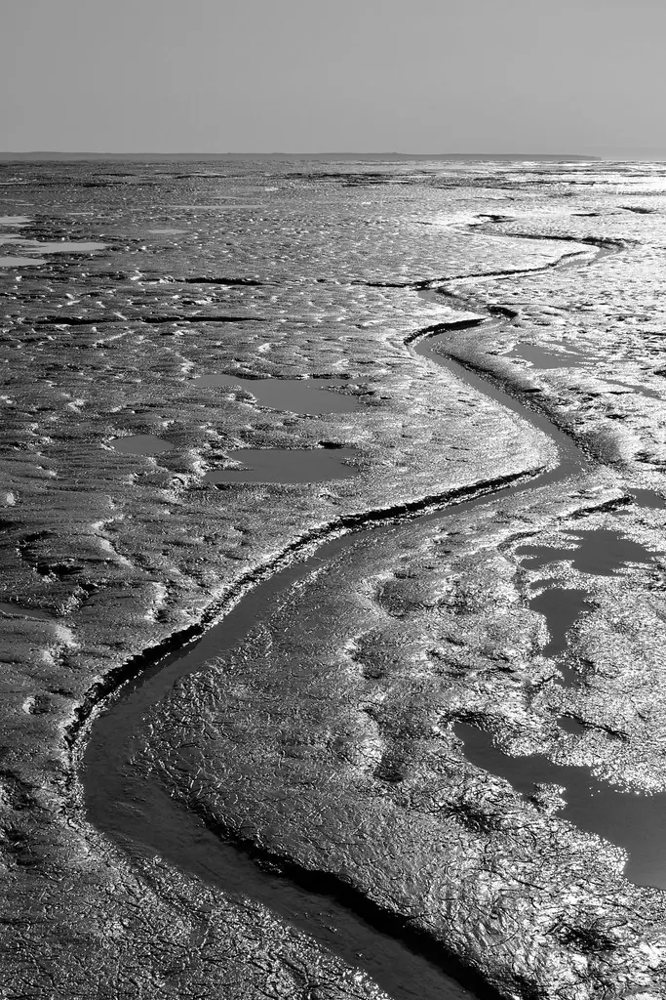
A tidal channel through mudflats at low tide, Anchorage, Alaska.Photo: Paxson Woelber, Flickr (CC BY 2.0)
3
Global map of locations and latitudes
Estuaries form wherever rivers reach the sea, so they occur on every inhabited continent and at almost every latitude. What changes with latitude is the vegetation that lines them.
Estuary location (numbered in the table)
Latitude lines; bold lines at 30° N and S
Major rivers
Representative estuaries on six continents. Winkel Tripel projection; coastlines, lakes and rivers from Natural Earth; estuary positions plotted for this site.21
Representative estuaries and their latitudesApproximate latitude of the estuary mouth. Types follow NOAA’s classification where NOAA names the estuary.22,6
#
Estuary
Country
Latitude
Notes
1
Chesapeake Bay
United States
≈ 37° N
Drowned river valley (coastal plain) estuary; 64,000-square-mile watershed22,9
2
San Francisco Bay
United States
≈ 38° N
Tectonic estuary; partially mixed; one of the largest estuaries on the U.S. West Coast22,6,11
3
Amazon River estuary
Brazil
≈ 0°
The Amazon carries 15–16% of all river water reaching the oceans23
Chesapeake Bay (≈ 36.9°–39.6° N): a drowned river valley. The Susquehanna enters at the head; the Potomac and James join from the west. Salinity rises from under 0.5 ppt at the head to 25–30 ppt at the mouth.22,3
San Francisco Bay (≈ 37.4°–38.2° N): a tectonic estuary. River water from the Sacramento–San Joaquin Delta flows through Suisun and San Pablo Bays to the Golden Gate.22 About 85% of the bay’s historic wetlands have been lost to development.24
Close-up maps drawn from Natural Earth 1:10m land and river data; labels mark regions, not exact salinity boundaries.21
Latitudinal range and why estuaries occur where they do
Rivers meeting the sea. Any coast where a river enters the ocean can host an estuary, from the equatorial Amazon to the subarctic. The map spans roughly 35° S to 54° N, and estuaries extend beyond both.
Rising seas built today’s estuaries. Most estuaries are geologically young, less than 10,000 years old. Coastal plain estuaries like Chesapeake Bay formed at the end of the last ice age, 10,000–18,000 years ago, when melting glaciers raised sea level and flooded low river valleys. Others form behind barrier islands (bar-built), in basins created by plate movements (tectonic, like San Francisco Bay) or in valleys carved by glaciers (fjords).22
Latitude decides the vegetation. Mangrove forests grow along tropical and subtropical coasts where sea-surface temperatures never drop below 16 °C, lining about two-thirds of tropical coastlines.7 A satellite survey found mangroves in 118 tropical and subtropical countries and territories, with the largest share between 5° N and 5° S.25 Toward the poles, salt marshes take over: a global saltmarsh dataset records them in 99 countries.26 The bold 30° lines on the map mark the approximate boundary between these two kinds of estuary edge.
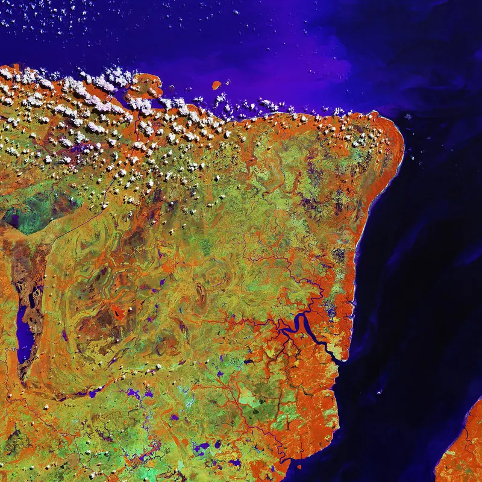
Marajó Island at the mouth of the Amazon, Brazil, seen from orbit.Photo: europeanspaceagency, Flickr (CC BY-SA 2.0)
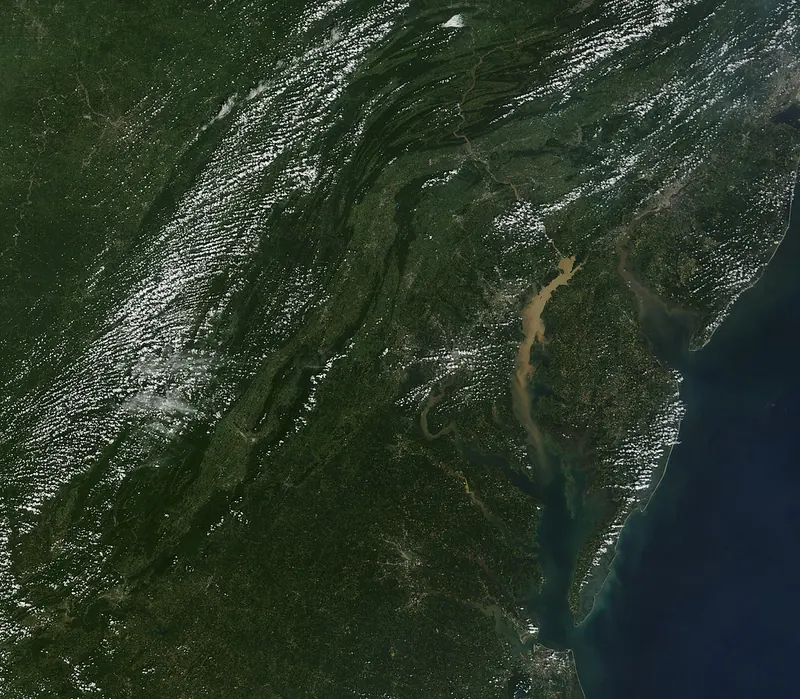
Sediment-laden water in the Chesapeake Bay, seen from orbit (NASA).Photo: NASA Goddard Photo and Video, nasa (CC BY 2.0)
4
Characteristic plant and animal species
Four groups of producers and ten animals, each explained as a chain from environmental challenge to adaptation, mechanism, advantage and payoff.
Estuary organisms face problems that land organisms never do. The biggest is osmotic stress: water moves across cell membranes from where it is less salty to where it is more salty. When the surrounding water suddenly freshens on a rainy spring day, water floods into cells; when it turns salty again on the next tide, water is pulled out. NOAA divides organisms into two groups: stenohaline species tolerate only slight changes in salinity and usually live in either fresh or salt water, while euryhaline species tolerate a wide range. Euryhaline species are far fewer, because coping with constantly changing salinity takes a lot of energy.7
Environmental challenge the problem the environment creates
Adaptation the inherited trait
How it works the biology behind it
Why it helps here the link to this ecosystem
Survival & reproduction the evolutionary payoff
4A Producers: living with salt, flooding and airless mud
Salt: exclude, store or secrete
Halophytes, salt-tolerant plants, survive by controlling how much sodium and chloride they take up, locking excess salt away in cell vacuoles and making harmless “compatible” solutes to balance it; some also have salt glands.27
Oxygen for drowned roots
Marsh soil is waterlogged and nearly oxygen-free, and it accumulates hydrogen sulfide, which poisons roots’ energy production.11,17 Plants that live there pipe air to their roots through spongy tissue called aerenchyma.28
Flooding and shifting sediment
Tides submerge low marsh twice a day and drop or scour sediment. Creeping underground stems (rhizomes) anchor plants and let them spread without seed.20,28
Light in murky water
Underwater plants need clear water; the health of submerged grasses is so closely tied to water clarity that scientists use them to assess water quality.29
Adaptation at a glance: producers● key adaptation discussed in the profile; ◐ partly true. A blank cell means not applicable
Species
Excludes / secretes salt
Stores salt (succulent)
Air channels to roots
Rhizomes / clonal spread
Lives fully submerged
Rapid blooms
Smooth cordgrassSpartina alterniflora
EelgrassZostera marina
Phytoplanktondiatoms, dinoflagellates
drifting
Glasswort & salt haySalicornia, Spartina patens
glasswort
salt hay
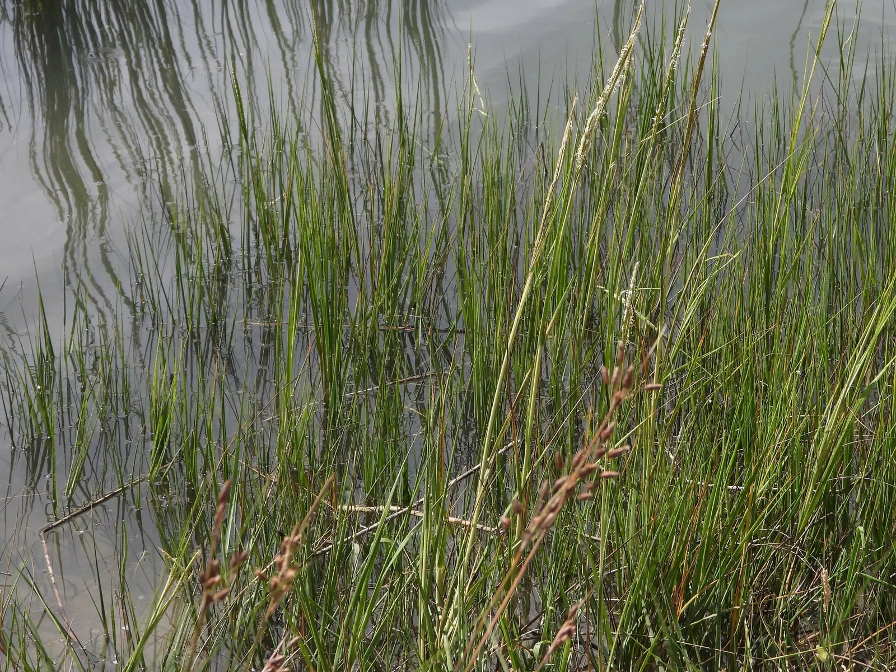
Tall-form smooth cordgrass at the marsh edge, Atlantic Beach, North Carolina.Photo: Emily Franzen, iNaturalist (CC BY)
Smooth cordgrass
Spartina alterniflora (also listed as Sporobolus alterniflorus)
Role
Primary producer; foundation species of the low marsh
Habitat
Low marsh, from the water’s edge up; flooded every high tide
Size
Short form to 2 ft; tall form to 7 ft along creek banks
Chesapeake status
The dominant grass of the Bay’s salt marshes
Ecological role
Smooth cordgrass dominates the low marsh down to the estuary’s edge and is one of the main components of marsh peat.11 It is the dominant grass of Chesapeake Bay’s salt marshes and provides habitat for marsh periwinkles, ribbed mussels and fiddler crabs.20 Its dead leaves become detritus that feeds the marsh food web.
Filtering, storing and secreting salt Physiological adaptation
Environmental challenge
Roots sit in salty water every day. Salt pulls water out of plant cells and is toxic inside them.
Adaptation
A three-part salt strategy: roots that filter salt out of the water the plant absorbs, leaves that expel excess salt, and cells that tolerate what remains.7,30
How it works
Membranes in the roots exclude much of the sodium and chloride. Salt that does enter is moved to the leaves, where salt glands secrete it onto the leaf surface. Inside cells, salt that remains is stored in vacuoles while the cytoplasm builds up harmless “compatible” solutes; together they keep the cells’ internal concentration high enough to keep drawing water from salty soil.7,30,27
Why it helps here
Most plants die in seawater-soaked soil; few competitors can live in the low marsh.11
Survival & reproduction
Cordgrass forms dense, nearly single-species stands across the zone flooded every day.
How smooth cordgrass handles salt and oxygen: roots filter out salt, leaves secrete it, and air spaces (aerenchyma) carry oxygen down to roots in airless mud. Schematic, not to scale.7,28
Aerenchyma: air pipes to the roots Structural adaptation
Environmental challenge
Waterlogged marsh peat contains almost no oxygen, and it accumulates hydrogen sulfide, which blocks roots’ ability to make energy and absorb nitrogen.11,17
Adaptation
Spongy tissue with large air spaces (aerenchyma), hollow stems and long hollow rhizomes.28,20
How it works
The air spaces form a continuous pipeline from the leaves above water down to the buried roots, so oxygen can move to tissues that are surrounded by airless mud. Cordgrass grows significantly more aerenchyma in its roots when flooded, which also reduces the roots’ oxygen needs.28
Why it helps here
Roots must respire; without an internal air supply they would suffocate in the low marsh.
Survival & reproduction
Cordgrass can colonize mud flooded twice a day, territory no other marsh grass can hold.
Rhizomes that grip shifting mud Reproductive and structural adaptation
Environmental challenge
Tides and storms deposit and scour sediment; seedlings are easily washed away.
Adaptation
Spreading mainly by long underground rhizomes that send up new stems, with a strong, interconnected root system.20,28
How it works
One plant becomes a large connected colony that shares resources; the root mat binds loose mud. Flowers bloom in July–September and mature into foot-long seed spikes, so it can also colonize new sites by seed.20
Why it helps here
Anchored colonies resist erosion; the U.S. Department of Agriculture uses smooth cordgrass to control shoreline erosion and stabilize tidal mudflats and dredge-fill sites in marsh restoration.28
Survival & reproduction
As stems trap sediment and roots add peat, the marsh builds itself up over time.11
Exam tip: Cordgrass has animal partners. Fiddler crab burrows aerate the soil, and ribbed mussels fertilize it; experiments show both increase cordgrass growth.31,19
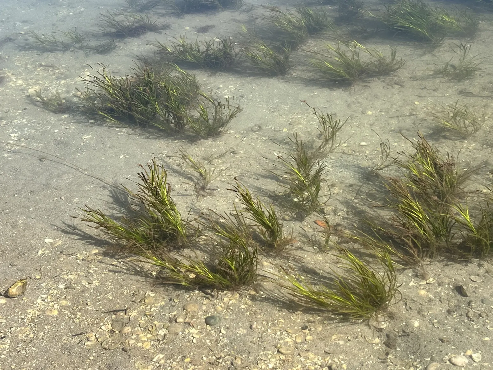
Eelgrass in shallow water at Estero Soldado, Sonora, Mexico.Photo: Sue Carnahan, iNaturalist (CC BY)
Eelgrass
Zostera marina
Role
Primary producer; submerged flowering plant
Habitat
Shallow, sandy, medium- to high-salinity water
Leaves
Ribbon-like, up to 4 ft long
Chesapeake range
Saltier middle to lower Bay only
Ecological role
Eelgrass is a true flowering plant that lives entirely underwater. Its beds are key foraging and hiding places for blue crabs, juvenile and molting crabs shelter among the leaves, and food for waterfowl such as brant and redheads and for green turtles.8
Pollination underwater Reproductive adaptation
Environmental challenge
Flowers cannot rely on wind or insects beneath the surface.
In early summer, female flowers are fertilized by pollen drifting in the water. The fertilized flowers develop into seed-bearing shoots that break off, float to the surface and release their seeds.8
Why it helps here
Currents and tides that would be a problem for land flowers become the delivery system for pollen and seed.
Survival & reproduction
Floating shoots carry seeds to new shallow areas, starting new beds.
Ribbon leaves and creeping rhizomes Structural adaptation
Environmental challenge
Tidal currents tug at plants rooted in loose sand and mud.
Adaptation
Long, flexible, ribbon-like leaves with a tube-shaped sheath at the base, and thick creeping rhizomes with many roots. (Zostera means “belt.”)8
How it works
Flexible leaves bend with moving water instead of resisting it, while rhizomes anchor the plant and spread it sideways; new plants also grow from rhizomes and from winter buds.8
Why it helps here
Dense, rooted beds hold sediment in place and create the sheltered, three-dimensional habitat young crabs need.8
Survival & reproduction
Clonal spread lets a bed persist and grow even when seed production is poor.
Why it matters: Because eelgrass needs clear water and is stressed when water stays warmer than 86 °F for long periods, it is a sensitive indicator of pollution and climate change.29,32
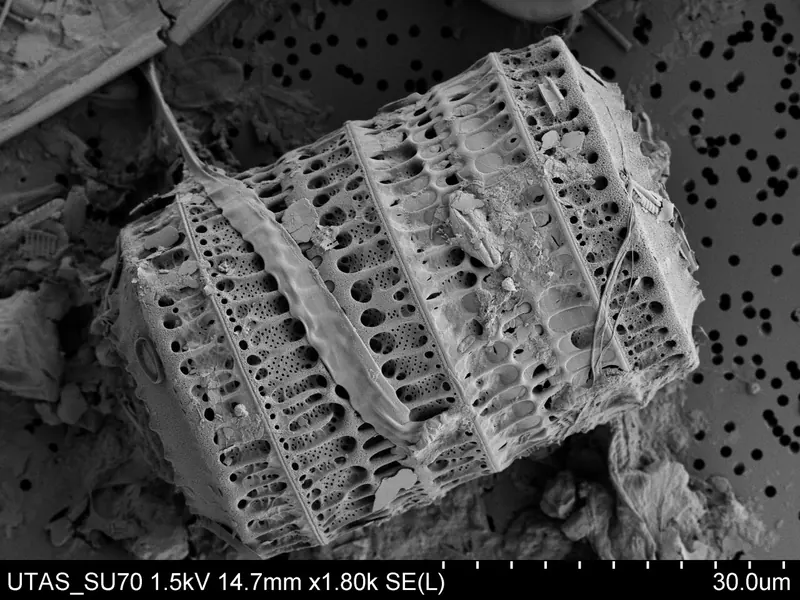
Chains of the diatom Paralia sulcata under a microscope.Photo: Jmpost, Wikimedia Commons (CC BY-SA 3.0)
Phytoplankton
Diatoms (class Bacillariophyceae, such as Paralia sulcata, pictured), dinoflagellates (Dinophyceae), cyanobacteria and other microscopic algae
Role
Primary producer; base of the open-water food web
Size
Microscopic, mostly single cells
Lifespan
Individuals rarely live more than a few days
Examples
Silica-encased diatoms, dinoflagellates
Ecological role
Phytoplankton are the foundation of the aquatic food web, feeding everything from microscopic zooplankton to whales; like land plants they use chlorophyll to capture sunlight, consuming carbon dioxide and releasing oxygen.33 In estuaries they are food for filter feeders such as oysters and menhaden.14,12
Explosive growth: blooms Life-history adaptation
Environmental challenge
Nutrients and light arrive in pulses, after spring runoff, after storms, when layers mix in fall.3
Adaptation
Very short generation times: when conditions are right, populations can grow explosively over a few days or weeks.33
How it works
A single cell divides into two, then four, then eight. Because each individual lives only a few days, the population turns over constantly and responds almost immediately to new nutrients.33
Why it helps here
Estuaries receive nutrient pulses from the whole watershed; rapid growth lets phytoplankton capture them before anything else can.
Survival & reproduction
Blooms feed the whole food web, but too many nutrients cause blooms so large that their decay strips oxygen from the water (see 5.4).12
Drifting in the sunlit surface water Structural adaptation
Environmental challenge
Estuary water is often murky, so light fades quickly with depth.16
Adaptation
Tiny, free-floating cells with chlorophyll; some types are encased in glassy silica shells (diatoms) and others are armored or swimming forms.33
How it works
Small cells have a large surface area for their volume, so they absorb nutrients efficiently and sink slowly, staying in the sunlit upper layer where photosynthesis is possible.
Why it helps here
Phytoplankton travel with the water itself, riding the estuary’s circulation instead of needing roots or sediment.
Survival & reproduction
Cells that stay in the light keep dividing.
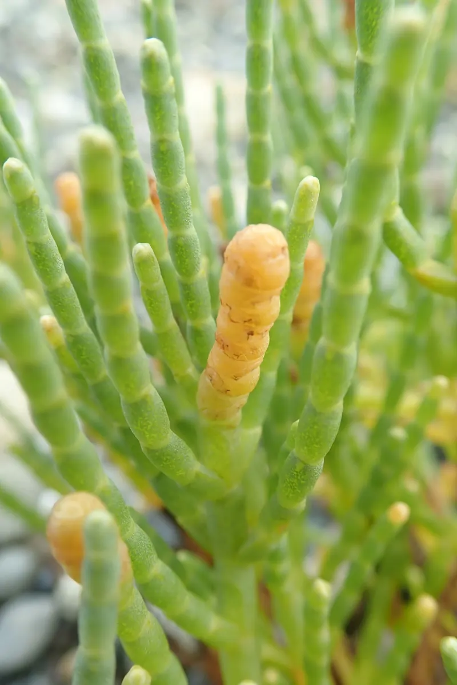
Pacific glasswort (Salicornia pacifica), a succulent with jointed, fleshy stems, on the British Columbia coast.Photo: no rights reserved, iNaturalist (CC0 1.0)
High marsh and salt pannes, flooded only by the highest tides
Glasswort
Edible succulent with jointed, fleshy stems
Salt hay
Very fine-leaved grass, 1–2 ft tall
Ecological role
Above the cordgrass zone, the high marsh floods only about twice a month. Salt hay and spike grass dominate it, black rush grows at the highest elevations, and glasswort grows in salt pannes, shallow depressions where seawater evaporates and leaves salt behind.11
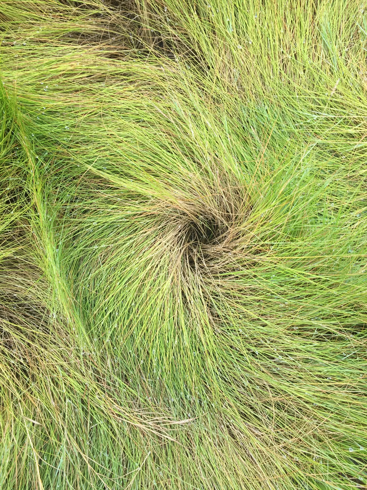
Saltmeadow cordgrass (salt hay) lying in swirled mats on the high marsh, Rowley, Massachusetts.Photo: no rights reserved, iNaturalist (CC0 1.0)
Glasswort: succulence and salt storage Physiological adaptation
Environmental challenge
In salt pannes, evaporation concentrates salt over many tidal cycles; glasswort is one of the only organisms that can survive there.11
Adaptation
A succulent, salt-loving (halophytic) plant with fleshy stems instead of thin leaves.7
How it works
Halophytes control salt uptake and pack sodium and chloride into the large central vacuoles of their cells, while the surrounding cytoplasm accumulates compatible solutes.27 Swollen, water-filled cells dilute the stored salt, keeping it away from enzymes.
Why it helps here
Storing salt raises the cells’ internal concentration, so they can still absorb water from extremely salty soil.
Survival & reproduction
Glasswort occupies the saltiest ground in the marsh, where it faces almost no competition.
Living at the right height Ecological pattern
Environmental challenge
Just a few centimeters of elevation change how often a spot floods and how salty it gets.11
Adaptation
Each species has its own salt and flooding tolerance, producing distinct bands (zonation): smooth cordgrass in the low marsh; salt hay and spike grass in the high marsh; black rush highest.11
How it works
Plants that tolerate more flooding and salt grow lower; less tolerant plants grow higher. Fine-leaved salt hay forms dense mats on the rarely flooded high marsh.11
Why it helps here
Matching tolerance to elevation lets each species grow where it does best.
Survival & reproduction
Zonation packs many plant communities, and the animals that depend on them, into a narrow strip of shoreline.
4B Animals: two ways to handle salt
Estuary animals deal with changing salinity in one of two basic ways. Osmoconformers, such as oysters and mussels, let the salt concentration of their body fluids rise and fall with the water around them; their cells protect themselves by adjusting an internal pool of amino acids and ions.34Osmoregulators, such as blue crabs and fish, spend energy pumping salts across their gills to keep their blood concentration fairly steady.35,36 Animals that cannot regulate often protect themselves by behavior instead: closing a shell, sealing a burrow or moving away.7
Osmoconformer versus osmoregulator. A conformer’s internal concentration follows the water; a regulator holds its blood concentration fairly steady, especially in dilute water. Schematic, based on Pierce (1982) and Towle et al. (1976).34,35
Adaptation at a glance: animals● key adaptation discussed in the profile; ◐ partly true. A blank cell means it does not apply.
Species
Salt strategy
Shell or closing
Burrows
Filter feeds
Tide-timed behavior
Tolerates low oxygen
Migrates by salinity
Camouflage
Eastern oysterCrassostrea virginica
conformer
anaerobic
Blue crabCallinectes sapidus
regulator
molts
larvae ride tides
Fiddler crabUca pugnax
Ribbed musselGeukensia demissa
conformer
air-gaping
Marsh periwinkleLittoraria irrorata
climbs stems
MummichogFundulus heteroclitus
regulator
spawns on spring tides
Striped bassMorone saxatilis
regulator
Herons and egretsArdea, Egretta
hunt shallows
OspreyPandion haliaetus
long-distance migrant
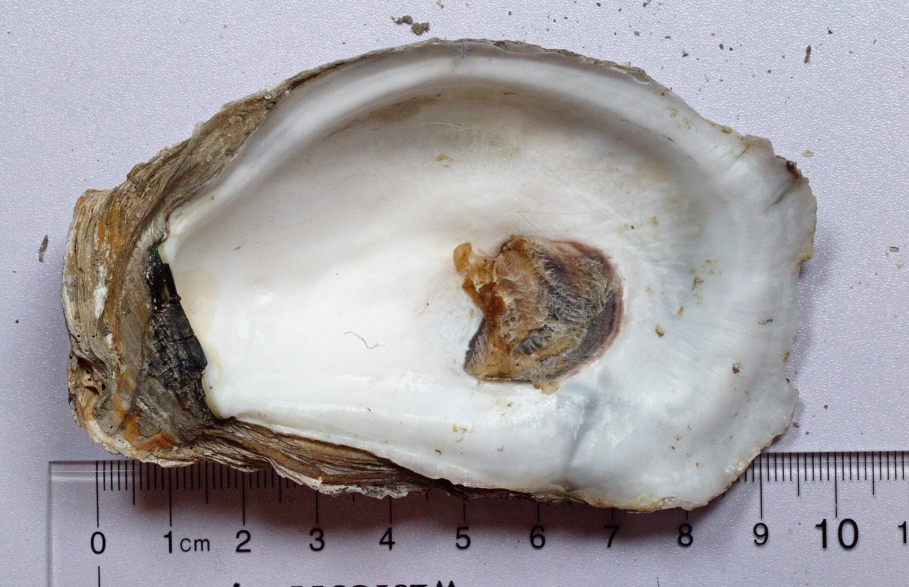
Inside the cupped bottom valve of an eastern oyster. The purple spot is the scar where the muscle that holds the shell shut was attached.Photo: Jud McCranie, Wikimedia Commons (CC BY-SA 4.0)
Eastern oyster
Crassostrea virginica
Role
Filter feeder; reef-building ecosystem engineer
Size
Usually 3 to 5 inches; up to 8 inches
Shell
Flat top valve, cupped bottom valve with a purple muscle scar
Ecological role
Oysters filter plankton from the water by pumping it through their gills. They attach to one another to form dense reefs (also called bars, beds or rocks) that provide habitat for many fish and invertebrates. They are also one of the Chesapeake Bay’s most important commercial species.14
Clamming shut and switching to anaerobic respiration Behavioral and physiological adaptation
Environmental challenge
Low tide can expose oysters to air, or bathe them in water that is suddenly much fresher.7
Adaptation
Oysters close their shells, stop feeding and switch from aerobic respiration to anaerobic respiration, which does not need oxygen.7
How it works
A strong muscle holds the two valves tightly shut, sealing the oyster away from the bad water. The space inside the shell is always filled with water, so the oyster can survive a long time closed. Hours later, when the tide brings back saltier, oxygen-rich water, it opens up and resumes feeding and breathing.7,14
Why it helps here
An oyster is cemented in place and cannot swim away from a pulse of fresh water. In cool months oysters can even survive out of the water for extended periods, though freezing air kills them.14
Survival & reproduction
Waiting out stressful tides lets oysters live where salinity swings daily, across much of the estuary.
Cells that adjust to the water around them Physiological adaptation
Environmental challenge
When salinity drops, water flows into cells by osmosis and could burst them; when salinity rises, water flows out.
Adaptation
Oysters are osmoconformers: their body fluids follow the salinity of the water, and their cells control their own volume.34
How it works
The cells of euryhaline osmoconforming invertebrates keep a large internal pool of free amino acids and also use inorganic ions. When the water freshens, cells release some of these dissolved particles, so less water rushes in; when it turns saltier, they build the pool back up.34
Why it helps here
Conforming is cheaper than pumping salt, which suits an animal that cannot move.
Survival & reproduction
Cell volume control lets oysters survive the gradual salinity changes of seasons and storms.
Swimming larvae that settle on shell Reproductive adaptation
Environmental challenge
Adults cannot move, and soft mud is a poor place to live.
Adaptation
Mass spawning and a free-swimming larval stage. A female can release about 100 million eggs a year.14
How it works
Spawning begins in early summer as temperature and salinity rise. Larvae drift as plankton for two to three weeks, then the “pediveliger” larva settles on hard material and cements its left valve in place to become spat.14
Why it helps here
Tides and currents spread larvae across the estuary, and settling on existing shell builds reefs upward, out of the mud.14
Survival & reproduction
Huge numbers of offspring make up for heavy losses to predators and disease. Many oysters also change sex: most under one year old are male, while most older oysters are female.14
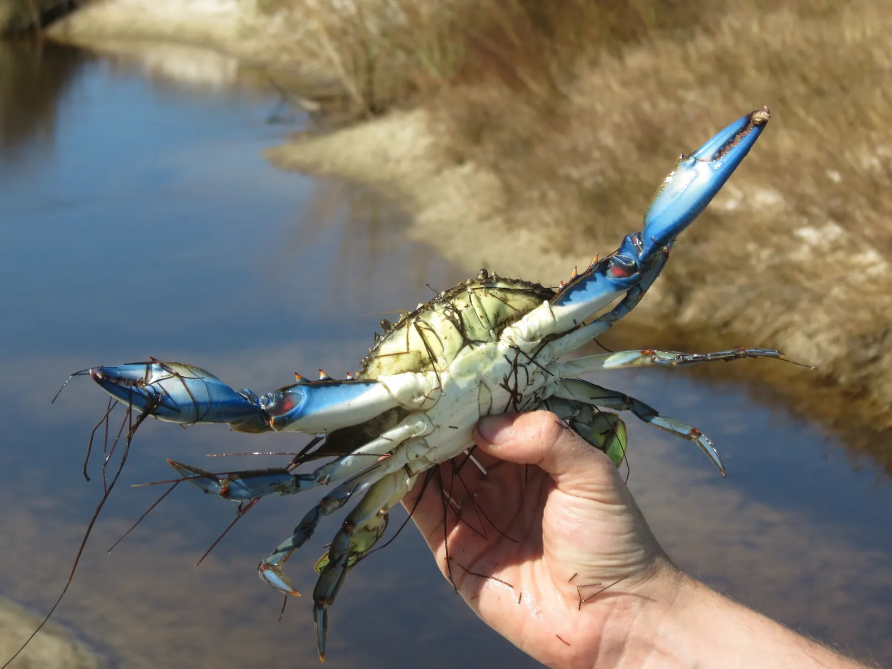
A blue crab, Florida: blue claws and paddle-shaped swimming legs.Photo: no rights reserved, iNaturalist (CC0 1.0)
Blue crab
Callinectes sapidus
Role
Mobile predator and scavenger
Size
Shell up to 9 inches across
Lifespan
Mature at 12 to 18 months; few live past 3 years
Ecological role
Blue crabs eat nearly anything they can find, including clams, oysters, mussels, smaller crustaceans, dead fish and detritus, and are themselves eaten by striped bass, red drum, herons and sea turtles.37 By eating marsh periwinkles, they help protect cordgrass from overgrazing.38
Gills that pump salt Physiological adaptation
Environmental challenge
In the fresher upper estuary, salts constantly leak out of the crab’s body into the dilute water.
Adaptation
Blue crabs are osmoregulators that keep a high sodium level in their blood even in low-salinity water.35
How it works
An enzyme in the gills, sodium–potassium ATPase, uses energy to pump sodium back into the blood. In crabs kept at 5 ppt, its activity was almost twice as high as in crabs kept at 34 ppt, and it increased within two and a half hours of moving crabs into low-salinity water.35
Why it helps here
Regulating lets blue crabs roam the whole estuary, from nearly fresh tidal rivers to the salty mouth.
Survival & reproduction
Adult males can live in low-salinity water upstream, while females favor the saltier water near the mouth.7
A life cycle that follows the salinity gradient Behavioral and reproductive adaptation
Environmental challenge
Blue crab larvae (zoeae) need water saltier than 30 ppt to develop well, which is found only in the ocean.7
Adaptation
A migration timed to salinity: crabs mate in brackish water from May through October, then females move to the saltier lower bay to release their eggs.37
How it works
A female carries an orange egg mass (a “sponge”) of 750,000 to 2 million eggs and releases larvae near the mouth of the bay. Larvae develop in coastal water for four to eight weeks, then return as megalopae, swimming up and down in response to light and tides and riding nighttime flood tides back up the estuary to seagrass beds and marsh edges.37,7
Why it helps here
Each life stage ends up in the salinity it needs, using the estuary’s own tides as transportation.
Survival & reproduction
Young crabs grow up in sheltered nursery habitats where they can feed and hide from predators.7
Paddle-shaped swimming legs Structural adaptation
Environmental challenge
Food and the right salinity are spread across a large body of open water.
Adaptation
The last pair of legs is flattened into paddles, behind three pairs of walking legs.37
How it works
The paddles scull through the water like oars, so a blue crab can swim as well as walk on the bottom.
Why it helps here
Swimming lets crabs make long seasonal migrations, chase prey and escape predators.
Survival & reproduction
Mobility is what lets females reach high-salinity spawning water.
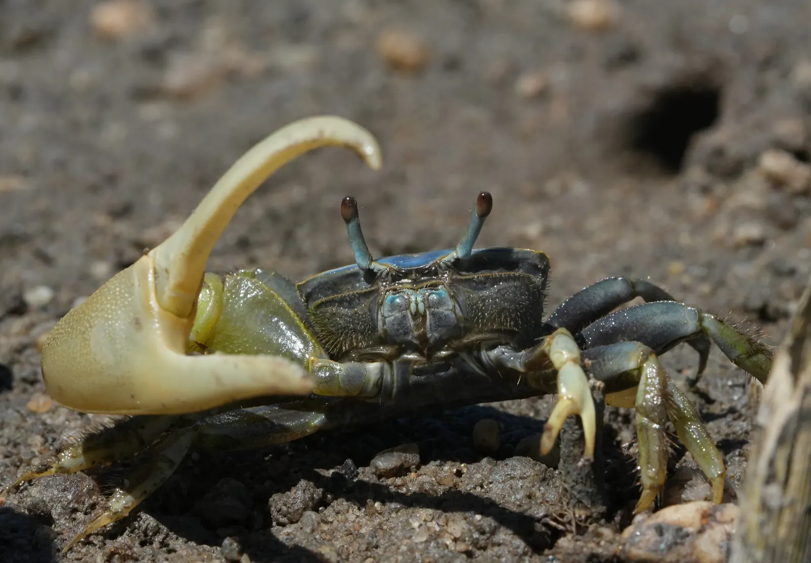
A male Atlantic marsh fiddler crab and its oversized claw, Long Island, New York.Photo: no rights reserved, iNaturalist (CC0 1.0)
Atlantic marsh fiddler crab
Uca pugnax (also listed as Minuca pugnax)
Role
Deposit feeder and burrowing ecosystem engineer
Size
Shell about 15 by 23 mm (males)
Burrows
30 to 92 cm deep in mud and sand
Ecological role
Fiddler crabs feed on detritus in marsh mud and dig burrows throughout cordgrass marshes. Their burrows improve soil drainage and oxygen levels and speed the decay of buried plant material; when researchers reduced fiddler crab numbers for one season, cordgrass production fell by 47%.18,31
Burrows sealed at high tide Behavioral adaptation
Environmental challenge
Twice a day the marsh floods, bringing predators such as blue crabs and fish; at low tide crabs are exposed to birds, heat and drying air.
Adaptation
Deep burrows, often near grass stems, which the crabs plug with mud during high tide.18
How it works
As the tide rises, a crab retreats into its burrow and seals the entrance with a mud plug, staying inside until the water drains away.18
Why it helps here
Cordgrass roots give burrow walls support in soft mud that would otherwise collapse.31
Survival & reproduction
A safe burrow lets the crab survive each flood tide and return to feeding and courtship at low tide.
A fiddler crab’s day follows the tide: feeding on the exposed mud at low tide, sealed in its burrow at high tide. Schematic, not to scale; based on Animal Diversity Web and Bertness (1985).18,31
A built-in tide clock Physiological and behavioral adaptation
Environmental challenge
Food is available only while the mud is exposed, and the timing of low tide shifts by about an hour each day.
Adaptation
An internal tidal rhythm: fiddler crabs kept in the laboratory continue to show tidal cycles of activity.39
How it works
An internal clock keeps time with the tides, so crabs are primed to emerge as the water falls, rather than waiting to discover the change.39,18
Why it helps here
Being ready at the right moment maximizes feeding time during each brief low tide.
Survival & reproduction
More feeding time means more energy for growth and for courtship displays.
Sorting food from mud, and a giant signaling claw Structural and behavioral adaptation
Environmental challenge
Most food on a mudflat is a thin film of detritus mixed with inedible sediment; mates must be found in a crowded colony.
Adaptation
Mouthparts that separate detritus from mud using water pumped from the gills; in males, one enormous claw that can reach half of body weight.18
How it works
The crab scoops mud into its mouth, floats out the lighter edible particles and spits the cleaned sediment back out as pellets. Males wave the big claw and drum the ground with their legs to attract females.18
Why it helps here
Decaying cordgrass keeps adding fresh detritus to the marsh surface, so food is always underfoot.
Survival & reproduction
Efficient feeding and conspicuous signals together raise a male’s chances of mating.
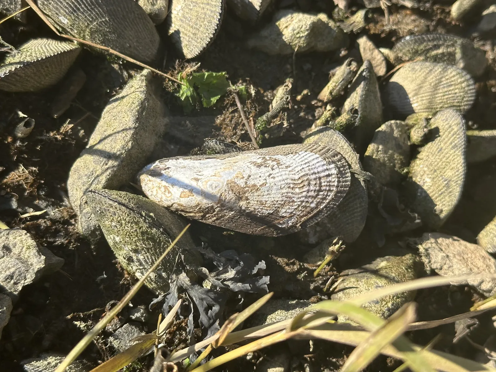
Ribbed mussels in marsh mud, Rhode Island.Photo: no rights reserved, iNaturalist (CC0 1.0)
Ribbed mussel
Geukensia demissa
Role
Filter feeder; partner of cordgrass
Habitat
Partly buried among cordgrass stems in the intertidal marsh
Tolerance
Temperature range of at least 56 °C
Ecological role
Ribbed mussels filter the water at high tide and deposit their wastes on the marsh surface. Experiments in a New England marsh showed that mussels raise soil nitrogen and make cordgrass grow taller and produce more biomass, above and below ground.19
Byssal threads anchored to cordgrass Structural adaptation
Environmental challenge
Tidal currents and waves can wash loose animals off the marsh.
Adaptation
Strong protein threads (byssal threads) that attach the mussel to the bases of cordgrass stems.19
How it works
A gland in the mussel’s foot produces tough fibers that harden in water and glue to plant stems and to other mussels.
Why it helps here
Cordgrass roots provide a firm anchor in soft mud, and the mussel’s wastes in turn fertilize the grass: a two-way benefit (mutualism).19
Survival & reproduction
Anchored mussels stay in place to feed every high tide.
Air-gaping and toughness out of water Behavioral and physiological adaptation
Environmental challenge
Living high in the intertidal zone means hours out of water, exposed to heat, drying and big swings in salinity.
Adaptation
Air-gaping, plus wide tolerance of temperature (a range of at least 56 °C) and salinity, extensive tolerance of drying out, and very heat-stable enzymes.40
How it works
At low tide the mussel opens its shell slightly to breathe air (aerial respiration) instead of staying sealed. Enzymes that keep working at high temperatures let its cells function on a hot mudflat.40
Why it helps here
These traits let ribbed mussels live higher in the marsh than most other bivalves.40
Survival & reproduction
Living high in the marsh puts the mussel out of reach of many aquatic predators.
Periwinkles graze algae and detritus on cordgrass stems and the marsh surface.41 Their numbers are controlled by predators: when blue crabs and terrapins were removed in experiments, periwinkles turned a productive marsh into a bare mudflat within eight months.38
Climbing the grass with the tide Behavioral adaptation
Environmental challenge
Every high tide brings in hungry blue crabs, mud crabs and terrapins.41
Adaptation
Periwinkles avoid predators by climbing up marsh grass stalks.41
How it works
As the water rises, snails crawl up cordgrass stems and stay above the waterline until the tide falls, then return to graze.
Why it helps here
Aquatic predators can only reach what is underwater.
Survival & reproduction
Escaping each high tide lets snails live long enough to reproduce; they release eggs into the water, which hatch into free-swimming larvae.41
Farming fungus on cordgrass Behavioral adaptation
Environmental challenge
Living cordgrass is tough, salty food.
Adaptation
Fungus farming, documented along 2,000 km of the Atlantic coast: periwinkles graze wounds into live grass mainly to prepare a surface for fungi, which they then eat.42
How it works
The snails chew holes in cordgrass leaves and spread their waste across the cuts, which encourages fungal growth; fungi are their preferred food.41,42
Why it helps here
Fungi turn hard-to-digest grass into richer food. This was the first fungus farming found in the ocean and outside insects.42
Survival & reproduction
A reliable, home-grown food supply supports dense snail populations.
Exam tip: This is a trophic cascade: blue crabs eat periwinkles, periwinkles eat cordgrass. Overharvesting blue crabs may contribute to salt marsh die-offs across the southeastern United States.38
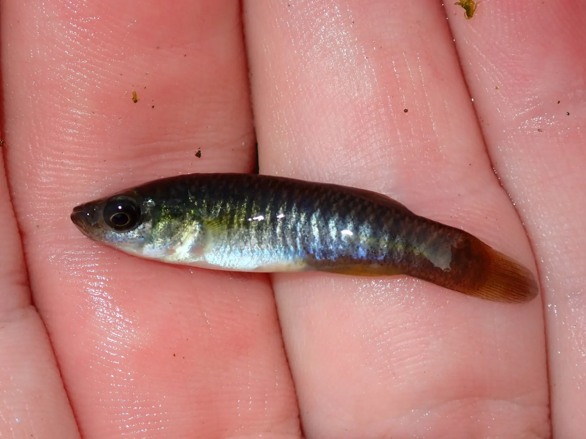
A mummichog, Belmar, New Jersey.Photo: Zakqary Roy, iNaturalist (CC BY)
Mummichog
Fundulus heteroclitus
Role
Small omnivorous fish; prey for larger fish and wading birds
Size
5 to 6 inches
Name
A Native American word meaning “going in crowds”
Ecological role
This hardy killifish of marsh creeks eats algae, plants, insects, worms, small crustaceans and mollusks, and it is eaten by larger fish, wading birds and seabirds. It often forms schools of hundreds.43
Gills that switch direction Physiological adaptation
Environmental challenge
Marsh creeks swing between nearly fresh and fully salty water, and between warm, low-oxygen and cool conditions.
Adaptation
The mummichog withstands changes in temperature and salinity, low oxygen and even pollution.43
How it works
Euryhaline fish rely on mitochondria-rich “chloride cells” in their gills. In salt water these cells pump excess chloride out using sodium–potassium ATPase and chloride channels; in fresh water different transporters take salt in.36
Why it helps here
Being able to reverse salt transport lets one fish live through every tide and season.
Survival & reproduction
Few predators or competitors can follow it into harsh, changeable creeks and pools.
Laying eggs at the highest tide Reproductive adaptation
Environmental challenge
Eggs in open water are eaten by many predators.
Adaptation
Females lay sticky eggs in empty mollusk shells or on dead vegetation when the tide is highest, around the new or full moon.43
How it works
When the tide recedes the eggs are left exposed to air, and they do not hatch until they are covered again by the next month’s highest tide.43
Why it helps here
Eggs stranded high in the marsh are out of reach of aquatic egg-eaters, and the tide cycle itself times hatching.
Survival & reproduction
Females can spawn up to 460 eggs as many as eight times in one season.43
Changing shade to match the surroundings Physiological adaptation
Environmental challenge
Herons, egrets and larger fish hunt by sight in shallow, clear creeks.43
Adaptation
Barred, olive and brown coloring whose shading can change with the surroundings.43
How it works
Pigment cells in the skin darken or lighten so the fish blends with mud or vegetation.
Why it helps here
Camouflage reduces detection in shallow water where there is nowhere deep to hide.
Survival & reproduction
Most mummichogs mature in their second year and live about three years.43
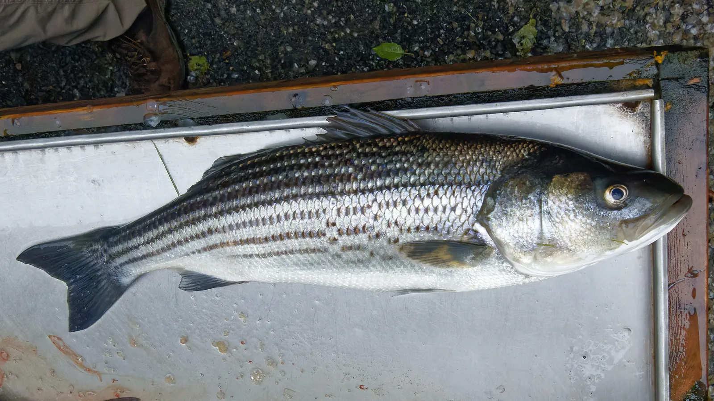
A striped bass, showing the dark lines along its silvery sides.Photo: Christian Back, iNaturalist (CC BY)
Striped bass (rockfish)
Morone saxatilis
Role
Top predatory fish
Size
Usually 2 to 3 feet, 10 to 30 pounds
Lifespan
10 to 30 years
Ecological role
Striped bass are among the top predators of the Chesapeake food web, eating menhaden, anchovies, worms, squid and crustaceans. The bay is the largest striped bass nursery on the Atlantic coast: 70 to 90% of the Atlantic population uses it to spawn.13
Swimming upstream to spawn Behavioral and reproductive adaptation
Environmental challenge
Eggs and larvae need fresh or slightly brackish water, while adults feed in the bay and ocean.
Adaptation
A semi-anadromous life cycle: adults move from salty water into tidal rivers to spawn, from April to early June.13
How it works
Females lay eggs in fresh or brackish water near shore; the eggs hatch in two to three days and the larvae drift slowly downstream. Juveniles spend summer in the shallows of tidal rivers, and most stay in their home river for two years.13
Why it helps here
The estuary provides both a low-salinity nursery and rich adult feeding grounds within one connected system.
Survival & reproduction
Young fish grow in sheltered, food-rich rivers before joining the adults.
Gills that work in fresh and salt water Physiological adaptation
Environmental challenge
Migrating between rivers, bay and ocean means facing opposite salt problems: losing salt in fresh water, gaining it in the sea.
Adaptation
Osmoregulation by the gills, which can either take up or secrete salt.36
How it works
In seawater, chloride cells actively secrete chloride; in fresh water, the gills absorb sodium and chloride using other transport proteins.36
Why it helps here
Switching gill function lets one fish use the full length of the estuary.
Survival & reproduction
Access to the whole salinity range links feeding grounds and spawning grounds.
Why it matters: Overfishing, habitat loss, pollution and low oxygen all threaten striped bass.13 In hot summers they face a “habitat squeeze” between surface water that is too warm and deep water without enough oxygen.32
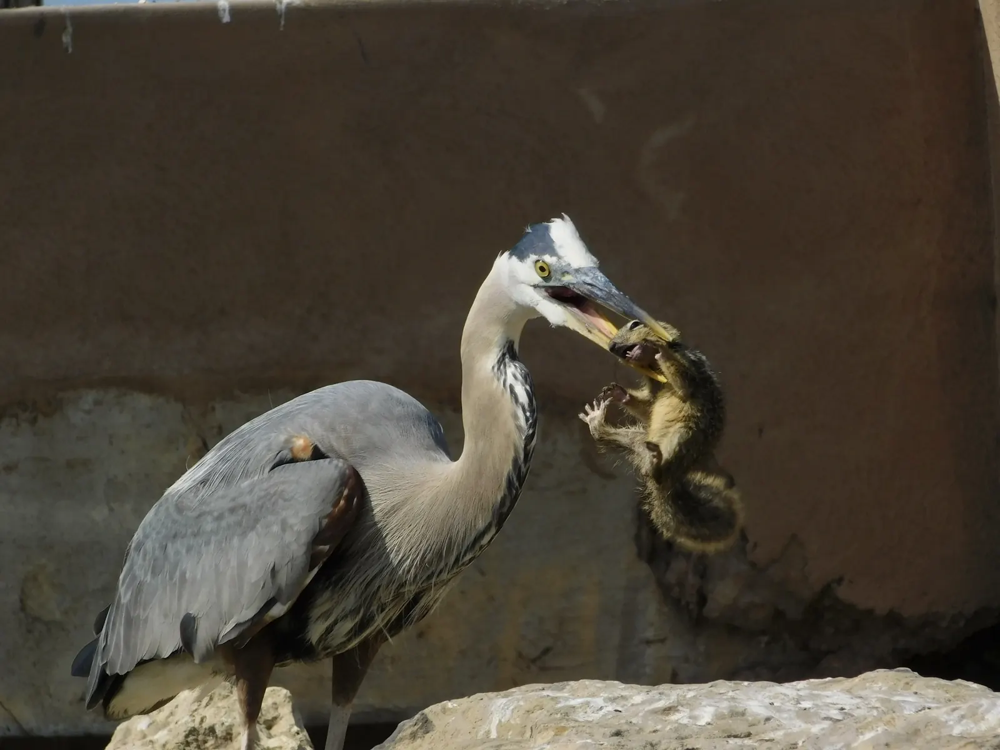
A great blue heron with its catch, Ventura, California.Photo: mostbittern, iNaturalist (CC BY)
Great blue heron
Ardea herodias
Role
Wading predator of fish and other small animals
Size
Up to 4 ft tall; 6 to 7 ft wingspan; only 5 to 6 lb
Nesting
Colonies (rookeries) in swamps and on small islands
Ecological role
The great blue heron eats mostly fish but also insects, amphibians, crustaceans and other small animals, and spends about 90% of its waking hours hunting.44
Stilt legs and a spear bill Structural and behavioral adaptation
Environmental challenge
Prey hides in shallow, murky water that a heron cannot swim in.
Adaptation
Long legs, a long neck held in an S-shape, and a yellow, spear-like bill.44
How it works
The heron silently stalks prey in shallow water, then straightens its coiled neck to plunge its bill into the water and seize the prey.44
Why it helps here
Estuary shallows and mudflats, alternately flooded and drained by the tide, concentrate fish within reach of a wading bird.
Survival & reproduction
Steady hunting success supplies the food for chicks in the nest.
Hollow bones and colony nesting Structural and reproductive adaptation
Environmental challenge
A large bird must still fly, and its eggs and chicks are vulnerable to crows, ravens, raccoons, eagles and other predators.44
Adaptation
Hollow bones keep a 4-foot bird at only 5 to 6 pounds; herons nest together in rookeries in isolated wooded swamps and on small islands.44
How it works
Males build stick nests high in trees; both parents incubate 3 to 7 eggs for about 28 days, and young fledge after about 60 days.44
Why it helps here
Islands and swamps in and around the estuary limit access by people and predators.44
Survival & reproduction
Parents usually raise only one or two of their chicks, focusing food where it will succeed.44
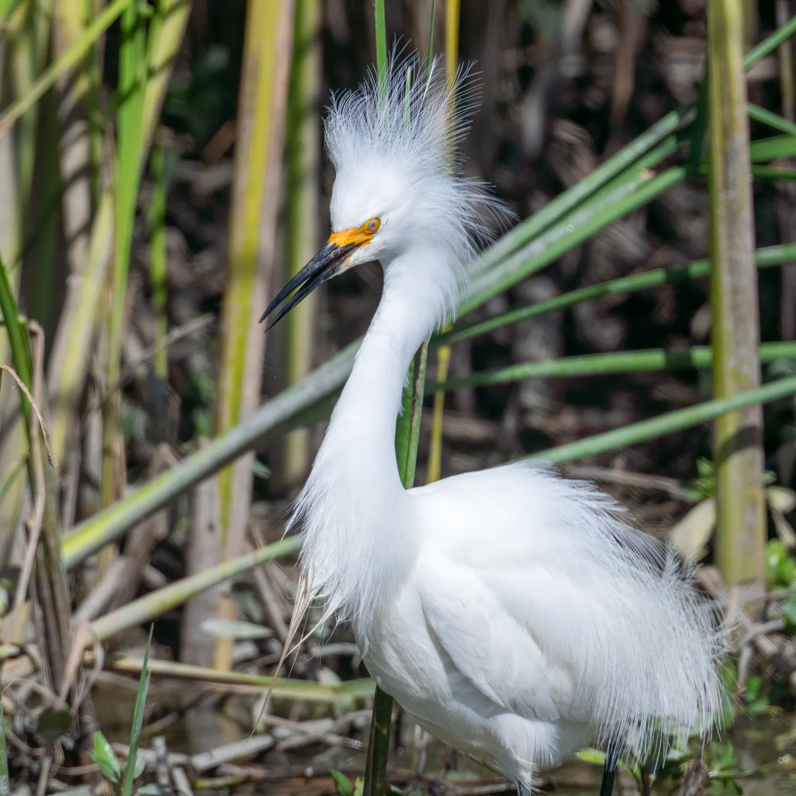
A snowy egret in its lacy breeding plumes.Photo: Jonathan Eisen, iNaturalist (CC BY)
Snowy egret and great egret
Egretta thula and Ardea alba
Role
Wading predators of fish and crustaceans
Snowy egret
27 in tall; black bill and legs, yellow feet
Great egret
39 in tall; yellow bill, black legs
Ecological role
Both egrets hunt fish, crustaceans and other small animals in estuary shallows and nest in colonies with herons and ibises on bay islands.45,46 They show how two related predators can share the same habitat by hunting in different ways.
Snowy egret: stirring up prey with yellow feet Behavioral adaptation
Environmental challenge
Small prey hides in soft mud and murky water.
Adaptation
An active hunting style: snowy egrets scurry through the water and use their feet to stir up the mud, then stab with their bills.45
How it works
Stirring flushes hidden animals out of the sediment so the egret can see and catch them. Snowy egrets often forage in groups with other water birds.45
Why it helps here
Mudflats and marsh pools are full of buried prey that a standing hunter would miss.
Survival & reproduction
A different technique from the herons reduces competition for the same food.
Great egret: patient stalking and stealing Behavioral adaptation
Environmental challenge
Competition for fish with many other wading birds.
Adaptation
Great egrets silently stalk prey in shallow water, then plunge their bills in; they also steal much of their food from smaller herons and egrets.46
How it works
A long S-shaped neck and spear-like bill strike quickly from a standing position.46
Why it helps here
Taking food from smaller birds turns competition into an opportunity.
Survival & reproduction
Females lay 3 to 5 eggs; both parents incubate them for about 24 days.46
Conservation history: Great egrets were hunted nearly to extinction in the 19th century for their breeding plumes. The great egret became the symbol of the National Audubon Society, founded to protect birds from being killed for their feathers.46
An osprey carrying a fish, Sussex County, Delaware.Photo: Carrie Seltzer, iNaturalist (CC BY)
Osprey
Pandion haliaetus
Role
Fish-eating bird of prey
Size
Up to 2 ft long; wingspan up to 6 ft
Chesapeake
Historically the world’s largest concentration of breeding ospreys
Ecological role
Ospreys feed almost exclusively on medium-sized fish such as perch, shad and menhaden.47 As top predators that eat fish, they were especially exposed to pesticides like DDT, which build up through the food chain (see 5.5); their populations rebounded after DDT was banned.48,49
Feet built to hold slippery fish Structural adaptation
Environmental challenge
Wet, slippery, struggling fish are hard to grip and carry.
Adaptation
A reversible outer toe, unusual among hawks, and barbed pads on the soles of the feet.49
How it works
The outer toe can swing backward, so the osprey grips with two toes in front and two behind, while the barbed pads keep the fish from sliding out.49
Why it helps here
Estuaries are full of schooling fish such as menhaden close to the surface.47
Survival & reproduction
A secure grip means fewer lost meals for the adult and its chicks.
Feet-first dives and a streamlined carry Behavioral adaptation
Environmental challenge
Fish are underwater, and a heavy catch makes flight harder.
Adaptation
Ospreys hover, then plunge into the water feet-first; back in the air they turn the fish to face forward.47
How it works
Hovering lets the bird line up on its target; a feet-first dive puts the talons in contact first. Carrying the fish head-first reduces drag.47
Why it helps here
Open, shallow estuary waters make fish visible from the air.
Survival & reproduction
Efficient hunting fuels the long migrations ospreys make: one bird may fly more than 160,000 migration miles in a 15- to 20-year life.49
Faithful to the same high nest Reproductive adaptation
Environmental challenge
Eggs must be kept safe from predators on a coast with few tall, isolated perches.
Adaptation
Ospreys usually pair for life and return to the same nest site year after year, building bulky nests on tall structures near water.47
How it works
Nests sit on dead snags, utility poles, channel markers and nesting platforms, out of reach of most predators.47
Why it helps here
Reusing a proven site saves time and energy each spring.
Survival & reproduction
Artificial platforms have become an important tool for bringing ospreys back to areas where they had disappeared.49
Questions to be ready for
Likely questions about estuary adaptations, with short answers. Click a question to reveal the answer.
How does smooth cordgrass survive in salty, waterlogged mud?
Its roots filter out much of the salt and its leaves secrete the excess. Spongy aerenchyma tissue carries oxygen down to roots surrounded by oxygen-free mud.7,28
How do oysters tolerate changing salinity?
When the water turns too fresh they close their shells, stop feeding and switch to anaerobic respiration. Their cells also adjust internal amino acids and ions to control volume as salinity changes.7,34
What is the difference between an osmoconformer and an osmoregulator?
A conformer (oyster, mussel) lets its body fluids match the water. A regulator (blue crab, fish) uses energy, for example gill sodium pumps, to keep its blood concentration fairly steady.34,35
How do fiddler crabs cope with the tides?
They feed on exposed mud at low tide and retreat into burrows they plug with mud at high tide. An internal tidal clock times their activity.18,39
Why do female blue crabs travel to the mouth of the bay?
Their larvae need water saltier than 30 ppt, found only near the ocean.7
How does the ribbed mussel help cordgrass?
It attaches to cordgrass with byssal threads and its wastes add nitrogen to the soil, increasing cordgrass growth.19
Why do periwinkles climb cordgrass stems?
To escape predators such as blue crabs that arrive with the rising tide.41
How is the mummichog’s egg-laying tied to the tides?
Eggs are laid at the highest tides of the month, sit exposed to air, and hatch when the next month’s highest tide covers them.43
What makes an osprey good at catching fish?
A reversible outer toe and barbed foot pads grip slippery fish; it dives feet-first and carries fish head-forward to reduce drag.49,47
+
Food webs, energy and nutrients
Rivers deliver nutrients, tides stir them, and a huge supply of plant growth feeds everything from plankton to ospreys, much of it after it dies and decays.
Food web and energy flow
Energy enters the estuary through two main groups of producers: microscopic phytoplankton drifting in the water, and rooted plants such as smooth cordgrass and eelgrass. Phytoplankton are the foundation of the aquatic food web, feeding zooplankton and filter feeders.33 Cordgrass is the main ingredient of marsh peat, so much of what it produces is not eaten alive but stored or broken down into detritus: bits of dead plant matter coated with bacteria and fungi.11 Detritus feeds fiddler crabs, periwinkles, mussels and blue crabs, which makes the estuary food web strongly detritus-based.18,41,37
A simplified estuary food web. Arrows point from food to the organism that eats it. Feeding links come from the species profiles and their sources: blue crab, periwinkle, mummichog, striped bass, osprey, heron and egret diets.37,41,43,13,47,44
Trophic levels in the estuary
Level
Role
Examples on this page
Producers
Capture solar energy by photosynthesis
Phytoplankton (diatoms, dinoflagellates), smooth cordgrass, eelgrass, salt hay, glasswort, algae on the mud
Striped bass, osprey, great blue heron, snowy and great egrets
Decomposers
Break down dead material and release nutrients
Bacteria (including the sulfide-producing bacteria of oxygen-free mud) and fungi
Nutrient cycling: delivered by rivers, trapped by mud
Nutrients from the whole watershed flow into estuaries, where they support lush plant growth.2 The estuary works like a trap. Where fresh and salt water meet, nutrients and sediment are mixed, resuspended and held in the zone of maximum turbidity, which young fish use as a nursery.3 Salt marshes filter herbicides, pesticides, heavy metals and excess sediment and nutrients out of the water.2 Animals move nutrients too: ribbed mussels filter the water and deposit their wastes on the marsh, adding nitrogen to the soil and boosting cordgrass growth.19 In autumn, the surface water cools faster than the bottom, and the two layers of the Chesapeake Bay can mix rapidly (often overnight), bringing nutrients back up from the bottom.3
The big idea
Nutrients are the estuary’s greatest gift and its greatest threat. In the right amounts they make estuaries some of the most fertile ecosystems on Earth; in excess they fuel algae blooms and dead zones (see 5.4).2,12
Key species and relationships
Foundation species: smooth cordgrass dominates the low marsh and builds the peat that the whole marsh stands on.11
Ecosystem engineers: eastern oysters build reefs that provide habitat for many fish and invertebrates, and filter plankton as they feed.14
Mutualism: ribbed mussels fertilize cordgrass while the grass anchors them, and fiddler crab burrows aerate the soil while cordgrass roots hold the burrows open.19,31
Trophic cascade: blue crabs and terrapins eat marsh periwinkles. Without these predators, periwinkles can turn a productive marsh into a bare mudflat within eight months.38
Farming: marsh periwinkles cultivate fungi on wounds they make in cordgrass, the first fungus farming found in the ocean.42
Nursery habitat: eelgrass beds shelter juvenile and molting blue crabs, and 70 to 90% of the Atlantic striped bass population uses the Chesapeake Bay to spawn.8,13
Biodiversity and productivity
Estuaries are among the most fertile ecosystems on Earth.2 Yet relatively few species live there, because tolerating wide changes in salinity takes a lot of energy, and far fewer organisms are euryhaline (able to tolerate a wide salinity range) than stenohaline.7 The result is an ecosystem with modest numbers of species but enormous numbers of individuals: dense oyster reefs, schools of hundreds of mummichogs and great colonies of nesting wading birds.14,43,44
Ecosystem services: why it matters to people
NOAA describes salt marshes as enormous filters and as buffer zones that stabilize shorelines and protect communities from floods and storm surge by soaking up water like a sponge.2 A global survey of salt marshes in 99 countries highlights their value for fish production, carbon storage and coastal protection.26 Estuaries also support fisheries for oysters, blue crabs and striped bass.14,37,13
Water filtering: marshes and oysters remove sediment, nutrients and pollutants
Storm protection: marshes absorb floodwater and storm surge
Food: oysters, blue crabs and fish raised in estuary nurseries
Carbon storage: carbon locked away in marsh peat
Wildlife habitat: nesting and feeding grounds for ospreys, herons and egrets
5
Specific problems caused by humans
An estuary collects whatever its watershed sends downstream, and its shores are some of the most crowded land on Earth. Most of these problems are linked, so one action upstream can ripple through the whole system.
NOAA notes that estuaries are among the most fertile ecosystems on Earth, yet they may also be among the most polluted.2 In the United States, 38% of the wetlands associated with coastal areas have been lost to draining, filling, damming and dredging.48 Problems 5.1 to 5.4 form a single chain, from farm field to dead zone, so they are best read together.
5.1
Agricultural runoff
Cause
Rain and snowmelt wash manure, chemical fertilizer and loose soil off farm fields, and dissolved nutrients also leach down into groundwater that later feeds streams.50
Environmental mechanism
Every stream in a watershed eventually drains to the estuary. The Chesapeake Bay’s watershed covers 64,000 square miles in six states and Washington, D.C., so runoff from farms hundreds of miles away ends up in the bay.9 Soil particles cloud the water, and nutrients fertilize algae.
Organisms & processes affected
Underwater grasses such as eelgrass need clear water so light can reach the bottom; their health is used as a barometer of water quality.29 Phytoplankton respond to the extra nutrients with blooms.
Ecological consequences
EPA links nutrient runoff from farms to eutrophication, low-oxygen dead zones, fish kills, decreased aquatic life and harmful algal blooms.50
Real-world example
The Chesapeake Bay’s pollution limits (see 6.1) target exactly the three things that run off fields: nitrogen, phosphorus and sediment.51
5.2
Fertilizer pollution
Cause
More fertilizer is applied to crops, lawns and golf courses than plants can use. EPA lists chemical fertilizer that crops do not fully use, and yard fertilizer from homes, as sources of nutrient pollution.52
Environmental mechanism
Unused fertilizer dissolves in runoff and drains toward the estuary; NOAA specifically names stormwater from overfertilized lawns, golf courses and agricultural fields.48 Some nitrogen also escapes into the air as ammonia and nitrous oxide.50
Organisms & processes affected
Fertilizer is designed to make plants grow, and in the water it does the same for algae and phytoplankton.12
Ecological consequences
Adds to the nutrient overload described in 5.3 and 5.4; money spent on fertilizer that washes away is also wasted for the farmer.
Real-world example
EPA’s recommended response is “nutrient management”: applying the right amount of fertilizer at the right time, by the right method and in the right place.50
5.3
Excess nitrogen and phosphorus
Cause
EPA identifies five main sources: agriculture; stormwater from roofs, roads and parking lots; wastewater from sewer and septic systems that do not remove enough nitrogen and phosphorus; fossil fuels burned in cars and power plants, which release nitrogen into the air; and household detergents, fertilizer and pet waste.52
Environmental mechanism
Nitrogen and phosphorus are the nutrients that normally limit plant growth. When they are abundant, algae grow explosively over days to weeks.33,12
Organisms & processes affected
Phytoplankton multiply; filter feeders such as oysters and menhaden eat some, but much of the bloom dies and sinks.12
In 2010 EPA set the Chesapeake Bay Total Maximum Daily Load, a “pollution diet” that limits how much nitrogen, phosphorus and sediment can enter the bay from six states and Washington, D.C.51
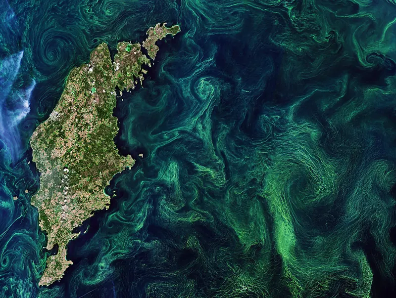
Algal blooms swirling across the brackish Baltic Sea, seen by satellite.Photo: europeanspaceagency, Flickr (CC BY-SA 2.0)
5.4
Eutrophication and hypoxia
Cause
Excess nutrients (5.1 to 5.3) combined with warm, layered summer water.12
Environmental mechanism
Algae blooms die and sink, and bacteria that decompose them consume dissolved oxygen until little or none is left. In spring and summer, warm fresh river water floats on cool salty water, and this layering (stratification) stops oxygen at the surface from mixing down.12,3
Organisms & processes affected
Most estuary animals need at least 5 mg of dissolved oxygen per liter to thrive; bottom fish, crabs and oysters need about 3. Water below 2 mg/L is hypoxic and below 0.2 mg/L is anoxic. Fish and crabs can swim away, but oysters cannot move and are especially vulnerable.12 In hot summers striped bass are caught in a “habitat squeeze” between surface water that is too warm and deep water without enough oxygen.32
Ecological consequences
Dead zones and fish kills; shaded seagrass beds die back; bottom communities are lost.12,29
Real-world example
The Chesapeake Bay Program describes dead zones in the bay that cause fish kills, and links them to nutrient pollution and to the layering of fresh and salt water that is strongest from spring through summer.12,3
From fertilizer to dead zone in five steps. Oxygen thresholds are those given by the Chesapeake Bay Program. Schematic, not to scale.12,52
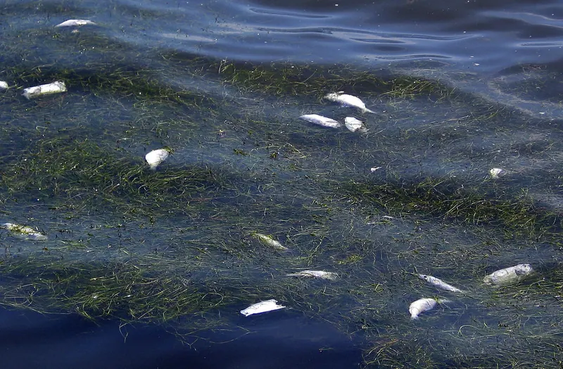
A fish kill in the Choptank River, a Chesapeake Bay tributary in Maryland.Photo: eutrophication&hypoxia, Flickr (CC BY 2.0)
5.5
Industrial and sewage pollution
Cause
Industrial discharges, street and yard runoff, sewage treatment plants, septic tanks and combined sewer overflows (old sewers that carry rainwater and sewage in the same pipe and overflow into rivers during storms).48
Environmental mechanism
Toxic substances such as pesticides, oil, antifreeze and metals like mercury and lead wash into estuaries and settle into the mud. Some, such as the insecticide DDT and the metal mercury, build up in living tissue and become more concentrated at each step up the food chain, a process called biomagnification.48
Organisms & processes affected
Contaminants pass from algae, shrimp, oysters and fish up to top predators such as ospreys, eagles and people.48 Combined sewer overflows are probably the largest source of bacteria and viruses in most estuaries.48
Ecological consequences
Poisoned top predators, unsafe shellfish and swimming water, and sewage nutrients that add to eutrophication (5.4). Osprey populations rebounded after DDT was banned.49
Real-world example
London’s tidal Thames was declared biologically dead in the late 1950s.53 Its recovery, including a new sewage tunnel, is described in 6.2.
5.6
Plastic pollution
Cause
Litter, bags and bottles carried by storm drains and rivers; plastic resin pellets from manufacturing; and microbeads once added to beauty products.54
Environmental mechanism
Plastic does not decay like plant matter. It breaks into smaller and smaller pieces until they are invisible, without losing mass.55 Pieces under 5 mm (about the size of a pencil eraser) are called microplastics.54
Organisms & processes affected
Aquatic animals and birds can mistake microplastics for food.54 In an estuary full of filter feeders and plankton-eaters, particles the size of food are a particular concern.
Ecological consequences
NOAA calls microplastics a potential threat to aquatic life, while noting that scientists still know relatively little about their effects.54
Real-world example
Researchers sampling four Chesapeake Bay tributaries found microplastics, with the highest concentrations where population density and urban and suburban development were greatest.55
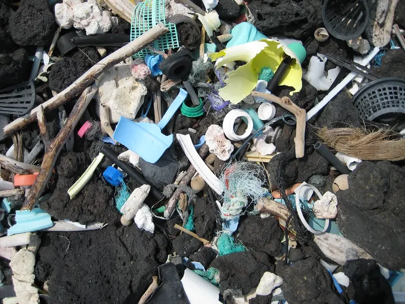
Plastic debris collected from a shoreline.Photo: NOAA Photo Library, Flickr (CC BY 2.0)
5.7
Coastal development
Cause
Homes, ports, roads and cities built along the shore. Marshes have been drained and filled to create shipping ports and expand urban areas.48
Environmental mechanism
Filling removes marsh outright. Seawalls, bulkheads and jetties “harden” the shoreline: about 14% of the continental U.S. coastline (22,842 km) is armored this way, and armoring is most common where housing is dense.56 Roofs and pavement also send more stormwater and nutrients into the water.52
Organisms & processes affected
Nursery habitat for young fish and crabs, feeding grounds for wading birds, and the marsh’s natural filtering and flood protection.2
Ecological consequences
Shoreline hardening can speed up erosion and the loss of beaches and tidal wetlands, and leaves the marsh nowhere to move as the sea rises.56
Real-world example
About 85% of San Francisco Bay’s wetlands (more than 150,000 acres) have been lost to development.24
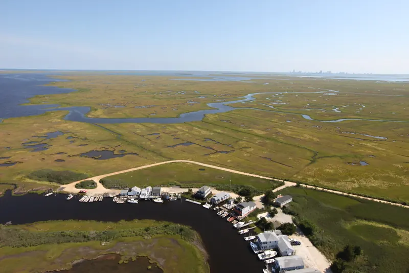
Houses built to the edge of the marsh at Edwin B. Forsythe National Wildlife Refuge, New Jersey.Photo: U. S. Fish and Wildlife Service - Northeast Region, Flickr (Public domain)
5.8
Dredging
Cause
Bottom sediment is dug out to create or maintain waterways deep enough for ships: channels, turning basins, ports and marinas. Because rivers keep delivering sediment, channels must be dredged again and again.57
Environmental mechanism
Dredging removes or buries animals living in the bottom and stirs up plumes of fine sediment that block light. It can also resuspend toxic metals, pesticides, pathogens and nutrients buried in the mud, expose older, more contaminated layers and briefly lower oxygen.57
Organisms & processes affected
Worms and small crustaceans that fish eat; eelgrass, whose depth, density and productivity are controlled mainly by light; phytoplankton; and fish, which can suffer higher larval death, reduced feeding and gill injury if sediment stays high.57
Ecological consequences
Bottom communities in estuarine mud can take from several months to several years to recover, and freshly disturbed bottom is easily colonized by invasive species.57
Real-world example
In San Francisco Bay, the amount of dredged sediment dumped back into the bay was cut from about 6.0 million cubic yards a year before 1990 to 1.64 million by 2010, with more of it reused, for example in wetland restoration.57
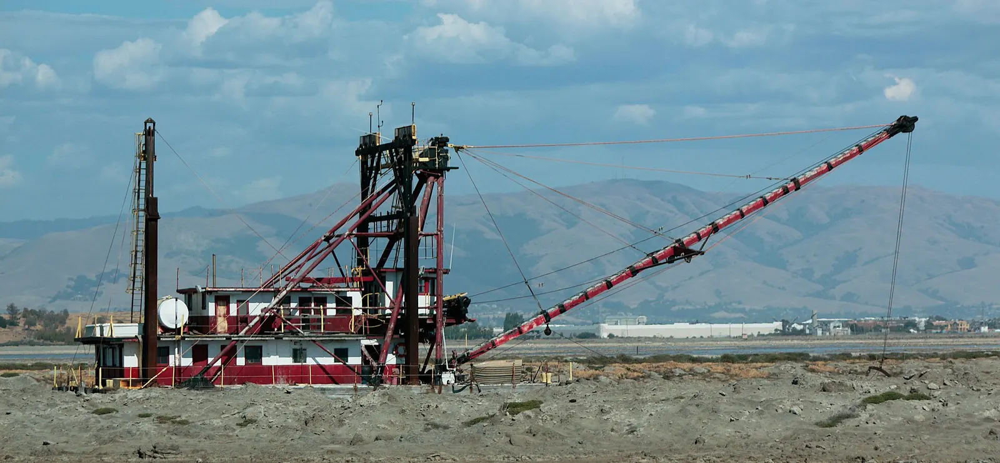
A dredger working near the Dumbarton Bridge in San Francisco Bay.Photo: JPxG, Wikimedia Commons (CC BY-SA 4.0)
5.9
Sea-level rise and saltwater intrusion
Cause
Climate change raises sea level. In the Chesapeake Bay, sea-level rise is made worse because the land itself is slowly sinking, a lingering effect of the last ice age.32,58
Environmental mechanism
As the sea rises, salt water pushes farther inland and into the fresh groundwater that coastal trees depend on.58 Coastal land is converted step by step: as forest dies back, marsh moves in, and the lowest areas can become open water.59,58
Organisms & processes affected
Salt slowly poisons coastal trees.58 Marshes flooded with salt water can disappear faster than they can move inland.32 Warmer water adds stress: eelgrass suffers when water stays above 86 °F for long periods.32
Ecological consequences
Loss of tidal marsh, the habitat and filter at the heart of the estuary, especially where development blocks marshes from migrating inland (5.7).32,56
Real-world example
NOAA describes “ghost forests” of dead, standing trees along North Carolina’s maritime forests and in Louisiana’s Mississippi Delta, where rising water and sinking land combine.58
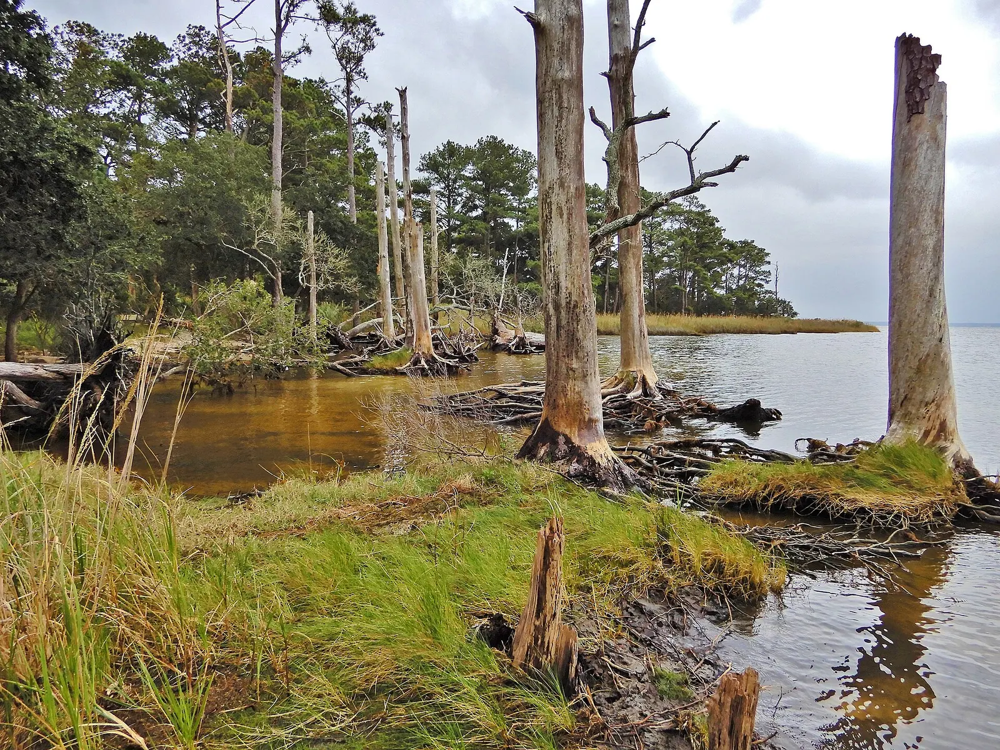
A ghost forest of dead trees on the North Carolina coast (Nags Head Woods).Photo: NC Wetlands from Raleigh, NC, Wikimedia Commons (CC BY 2.0)
5.10
Overfishing
Cause
Harvesting oysters, crabs and fish faster than their populations can replace themselves.60
Environmental mechanism
Removing adults reduces reproduction. Oysters are a special case: their larvae settle on hard surfaces, especially existing shell, so harvesting oysters also removes the reef that the next generation needs.14
Organisms & processes affected
Oyster reefs and their water filtering; striped bass, for which overfishing is a listed threat; and blue crabs, whose removal can unleash periwinkle grazing on the marsh.13,38
Ecological consequences
Lost filtering and reef habitat, and trophic cascades: overharvesting blue crabs may have contributed to large salt marsh die-offs in the southeastern United States.38
Real-world example
In Maryland’s part of the Chesapeake Bay, oyster numbers have fallen 99.7% since the early 1800s and 92% since 1980, and oyster habitat shrank by about 70% between 1980 and 2009, because of overfishing, disease and habitat loss together.60
6
Potential solutions
Because an estuary is fed by its whole watershed, solutions work at every scale: on farms and in sewers far upstream, along the shoreline, and in the water itself. Each solution lists the problems from section 5 that it addresses.
Farm practices keep nutrients and soil on the field and out of the water: nutrient management (the right amount of fertilizer, at the right time, in the right place), cover crops and perennial plants that keep the ground covered all year, planted buffers along field edges and streams that absorb and filter nutrients, conservation tillage, woodchip bioreactors that treat drainage water, and fences that keep livestock out of streams.50
Problem it addresses
Cuts the nitrogen, phosphorus and sediment that start the chain leading to algae blooms and dead zones.
Real-world example
Under the Chesapeake Bay Total Maximum Daily Load set in 2010, six states and Washington, D.C. wrote Watershed Implementation Plans and two-year milestones to reduce nitrogen, phosphorus and sediment, with practices for 60% of the reductions in place by 2017 and all of them by 2025.51
Limits & trade-offs
Depends on the cooperation of thousands of individual farms and landowners, and practices cost time and money to install and maintain.
Upgraded treatment plants remove more nitrogen and phosphorus before water is released, since ordinary sewer and septic systems do not always remove enough.52 Storage tunnels catch the mix of rain and sewage that old combined sewers used to spill into rivers during storms, and send it for treatment instead.61
Problem it addresses
Reduces nutrients feeding algae blooms, and the bacteria, viruses and sewage litter that make water unsafe.
Real-world example
London’s Thames Tideway Tunnel, a 25-km sewer running mostly beneath the river, cost about £4.6 billion.61 In its first full year, storm overflows into the tidal Thames fell by about 86% compared with the average before the tunnel (from more than 21 million to just under 3 million cubic meters), and about 84 tonnes of sewage-derived litter were kept out of the river.53 2025 was an unusually dry year, but the operator reports that the reduction was much larger than the weather alone would explain.53
Limits & trade-offs
Very expensive and slow to build; it does not stop nutrients that arrive as farm or street runoff.
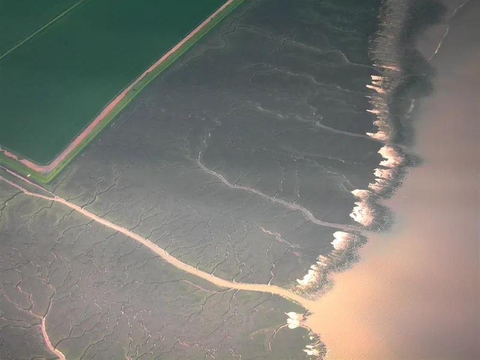
The Thames Estuary coast, England.Photo: Lars Plougmann, Flickr (CC BY-SA 2.0)
Levees around diked land are breached to let the tide back in. Sediment settles, cordgrass and other marsh plants recolonize, and the marsh again filters water and absorbs floods.24,2 Smooth cordgrass is planted to stabilize tidal mudflats and dredged-material sites in marsh restoration projects.28
Problem it addresses
Replaces marsh lost to development and filling, gives clean dredged sediment a useful home, and creates room for marshes to keep up with rising seas.32
Real-world example
The South Bay Salt Pond Restoration Project is the largest tidal wetland restoration on the U.S. West Coast and will restore 15,100 acres of former industrial salt ponds in San Francisco Bay.62 In December 2023 a 300-acre former salt pond was opened to the tides, part of a 50-year effort.24
Limits & trade-offs
Restored marshes take years to mature, and they need enough sediment to build up as fast as the sea rises.
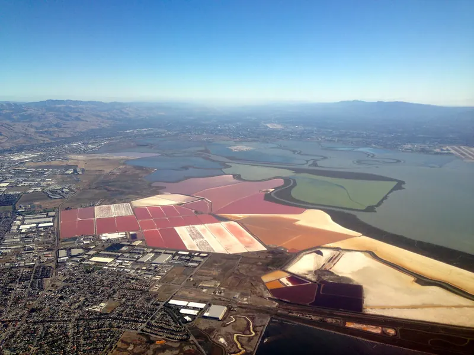
Salt evaporation ponds in South San Francisco Bay, from the air. Former industrial ponds like these are being returned to tidal marsh.Photo: andynash, Flickr (CC BY-SA 2.0)
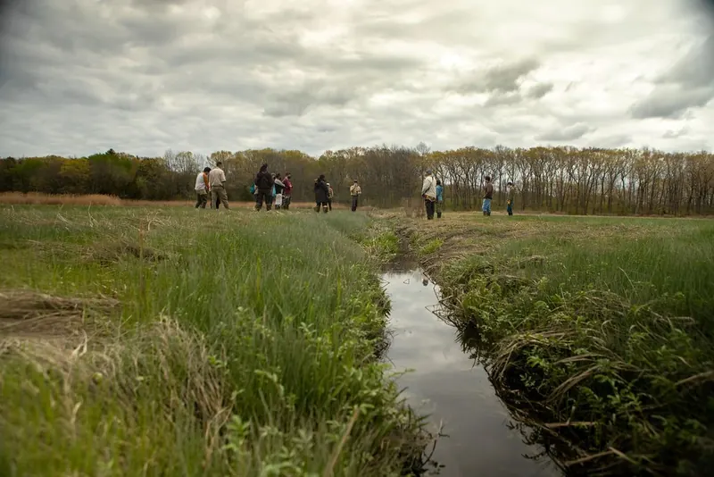
Learning about salt marsh restoration along a tidal creek.Photo: U. S. Fish and Wildlife Service - Northeast Region, Flickr (Public domain)
Instead of a concrete seawall, the shore is stabilized with natural materials such as marsh plants, sand, rock and oyster shell. Plants and reefs absorb wave energy, store floodwater, filter runoff and store carbon, and they become more stable over time as roots grow.63
Problem it addresses
Protects property without the habitat loss and erosion that come with hardened shorelines.56
Real-world example
NOAA reports that during major storms living shorelines perform better than hardened shorelines, and that natural habitats support more fish.63
Limits & trade-offs
Not suited to every site; very exposed, high-energy shores may still need some hard structure, such as the low rock sill shown below.
A bulkhead protects only the land behind it; a living shoreline protects the land and keeps the habitat. Schematic, based on NOAA Fisheries and Gittman et al. (2015).63,56
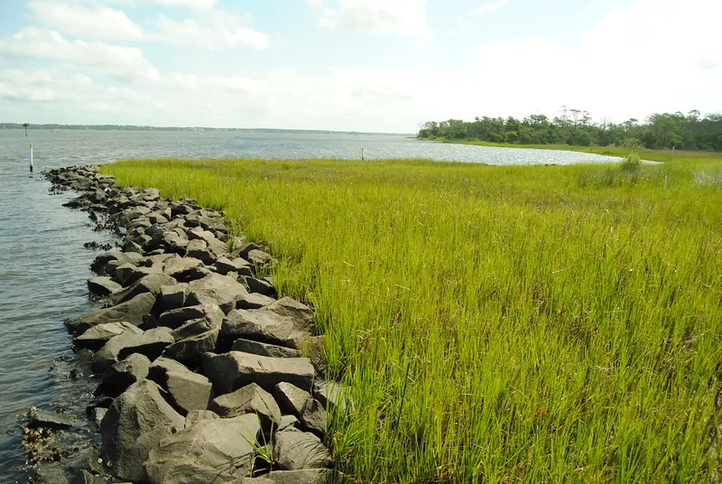
A living shoreline: a low rock sill shelters planted marsh grass.Photo: jessebraud, Flickr (CC0 1.0)
Stopping pollutants before they reach the water is cheaper than removing them afterward. At home this means using less yard fertilizer, cleaning up pet waste and choosing low-phosphorus detergents.52 For plastics, it means keeping litter out of storm drains, since microplastics come largely from larger debris breaking apart.54 For toxic chemicals, it means banning or restricting the most persistent ones.
Problem it addresses
Reduces fertilizer, toxic chemicals and plastic entering the estuary at their sources.
Real-world example
After DDT was banned, osprey populations rebounded, helped by nesting platforms.49 The Chesapeake Bay, historically home to the world’s largest concentration of breeding ospreys, now supports an estimated 8,000 to 10,000 breeding pairs.47
Limits & trade-offs
Relies on millions of individual choices; chemicals already buried in sediment remain for decades.
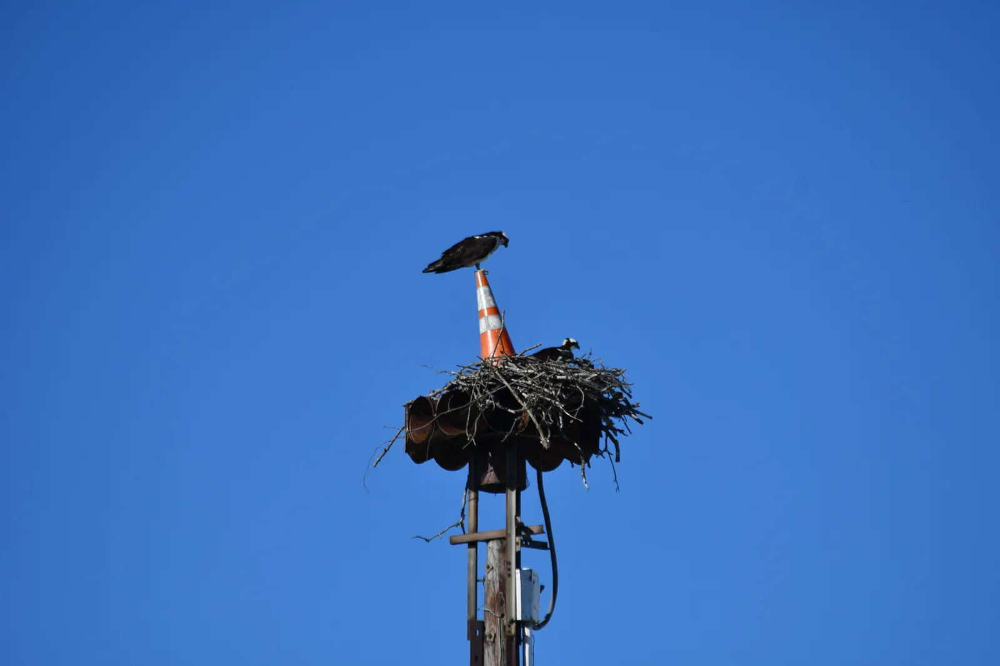
An osprey nest on a nesting platform, Rehoboth Beach, Delaware.Photo: inbetweenbays, iNaturalist (CC BY)
Catch limits and seasons keep harvest below what a population can replace; sanctuaries protect breeding stock. For oysters, restoration builds new reefs so that larvae have hard surfaces to settle on.14,64
Problem it addresses
Rebuilds overharvested populations and the filtering and habitat that oyster reefs provide.
Real-world example
By 2020, about 358 acres of oyster reef (an area larger than the National Mall) had been restored in Maryland’s Little Choptank River, beating the previous record of 348 acres in nearby Harris Creek, part of a goal to restore reefs in 10 Chesapeake tributaries by 2025.64
Limits & trade-offs
Disease and low oxygen can still kill restored oysters, and fishing limits can be hard on watermen who depend on the harvest.14,12
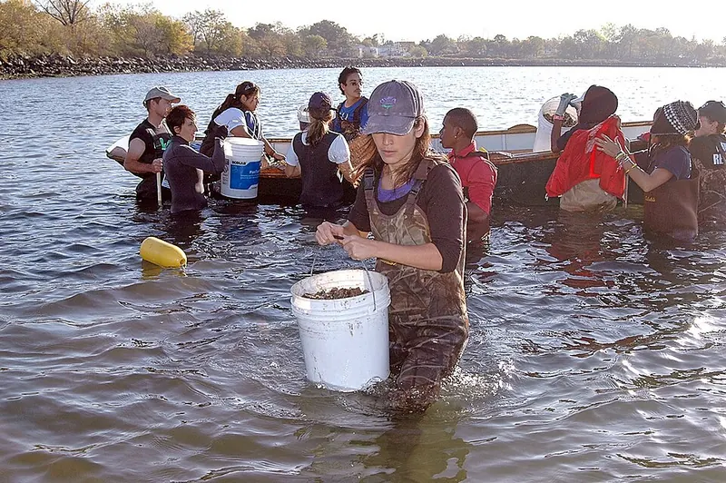
Volunteers build an experimental oyster reef off Soundview Park, New York City.Photo: USACE NY, Wikimedia Commons (CC BY 2.0)
Legally protecting marshes, seagrass beds and the undeveloped land behind them keeps habitat intact and leaves room for marshes to move inland as the sea rises.32
Problem it addresses
Prevents habitat loss before it happens, which is far cheaper than restoring it later.
Real-world example
The National Estuarine Research Reserve System, a partnership between NOAA and coastal states created under the Coastal Zone Management Act, protects about 1.4 million acres at 30 coastal sites.65
Limits & trade-offs
Protected areas cover only part of the coast, and they cannot stop pollution that flows in from upstream.
6.8
Estuarine monitoring and conservation programs
Addresses all of 5.1 to 5.10
How it works
Long-term measurements of salinity, oxygen, nutrients and wildlife show whether conditions are getting better or worse, and whether solutions are working. Programs also coordinate the work of federal, state and local partners.65,66
Problem it addresses
Turns scattered efforts into a coordinated plan with measurable goals.
Real-world example
EPA’s National Estuary Program works to improve the water, habitats and living resources of 28 estuaries of national significance.66 The research reserves run research, monitoring, training and education programs.65 In the Chesapeake, EPA assessed the 2025 results of the bay’s pollution diet.51
Limits & trade-offs
Monitoring shows problems but cannot fix them by itself; programs depend on steady funding over decades.
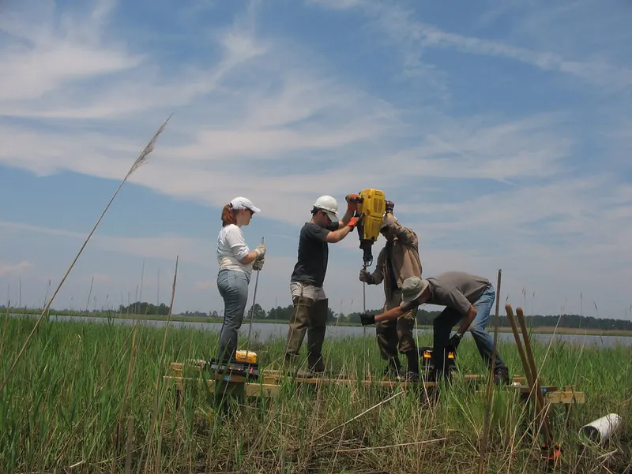
NOAA scientists install a surface elevation table, an instrument that tracks changes in a marsh’s surface height over time.Photo: NOAA's National Ocean Service, Flickr (CC BY 2.0)
7
Pictures
Photographs appear throughout this page next to the ideas they illustrate. These add a few more views of marsh, mud and water. Every image is used under a free license and credited.
Marsh, mud and water
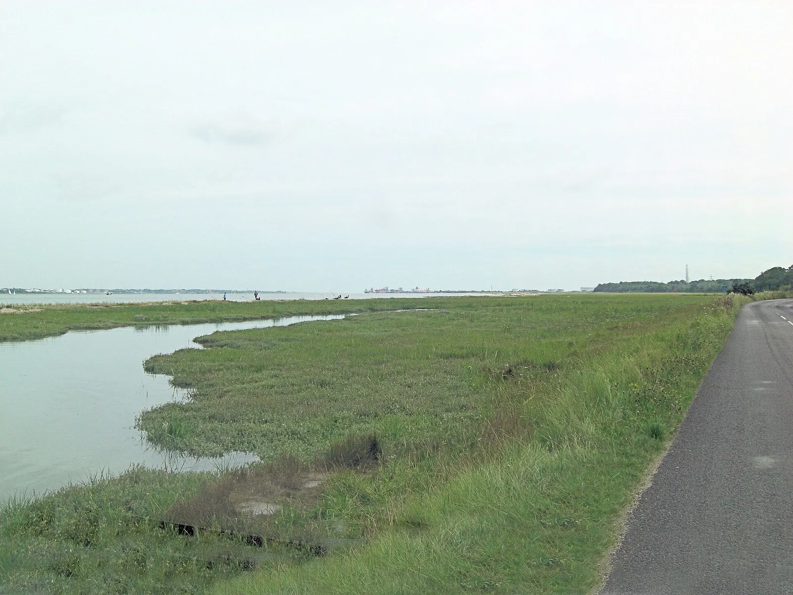
A cordgrass (Spartina) salt marsh with tidal channels at Hythe, on Southampton Water, England.Photo: Stuart Logan, Wikimedia Commons (CC BY-SA 2.0)
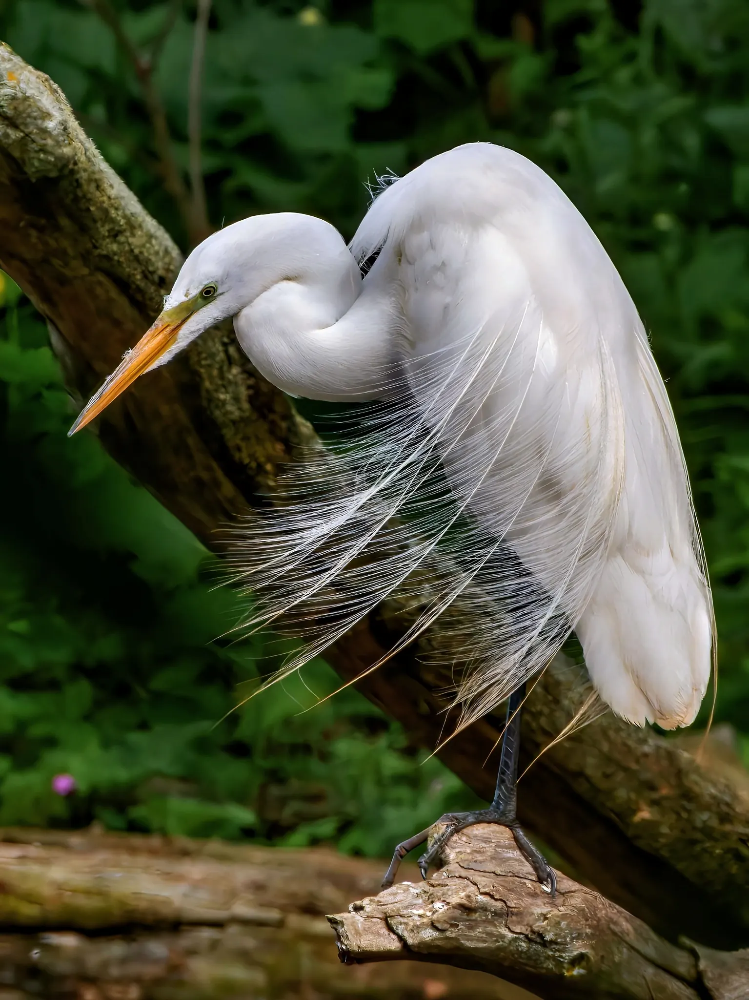
A great egret in breeding plumes, the feathers it was once hunted for, Ontario.Photo: Robert Roach, iNaturalist (CC BY)
Low tide in the Ria de Alvor, an estuary on the Algarve coast of Portugal.Photo: Notafly, Wikimedia Commons (CC BY-SA 4.0)
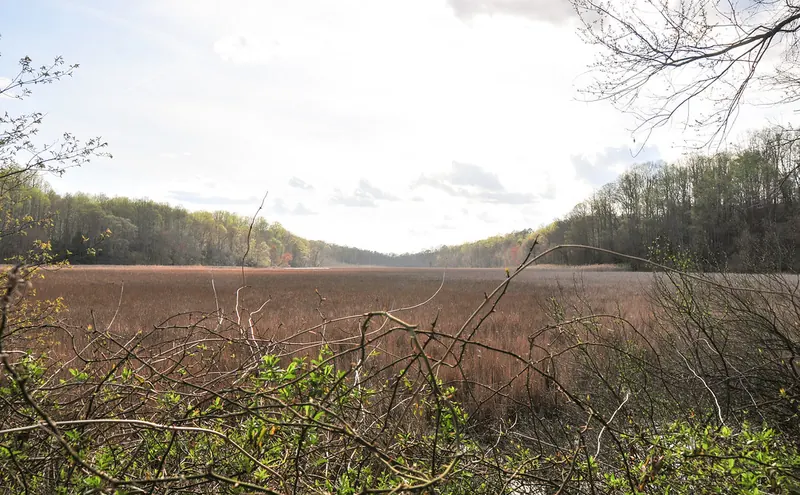
Parkers Creek salt marsh in late-winter colors.Photo: districtinroads, Flickr (CC BY-SA 2.0)
8
Sources cited
Every numbered superscript on this page links here. Photographs are credited under each image and listed on the credits page.
Symposium on the Classification of Brackish Waters.(1958).The Venice System for the classification of marine waters according to salinity.Limnology and Oceanography, 3(3), 346–347.https://doi.org/10.4319/lo.1958.3.3.0346
Sutherland, B. R., Barrett, K. J., & Gingras, M. K.(2014).Clay settling in fresh and salt water.Environmental Fluid Mechanics, 15(1), 147–160.https://doi.org/10.1007/s10652-014-9365-0
Koch, M. S., Mendelssohn, I. A., & McKee, K. L.(1990).Mechanism for the hydrogen sulfide-induced growth limitation in wetland macrophytes.Limnology and Oceanography, 35(2), 399–408.https://doi.org/10.4319/lo.1990.35.2.0399
Bertness, M. D.(1984).Ribbed mussels and Spartina alterniflora production in a New England salt marsh.Ecology, 65(6), 1794–1807.https://doi.org/10.2307/1937776
Giri, C., Ochieng, E., Tieszen, L. L., et al.(2010).Status and distribution of mangrove forests of the world using earth observation satellite data.Global Ecology and Biogeography, 20(1), 154–159.https://doi.org/10.1111/j.1466-8238.2010.00584.x
Mcowen, C. J., Weatherdon, L. V., Van Bochove, J.-W., et al.(2017).A global map of saltmarshes.Biodiversity Data Journal, 5, e11764.https://doi.org/10.3897/BDJ.5.e11764
Dennison, W. C., Orth, R. J., Moore, K. A., et al.(1993).Assessing water quality with submersed aquatic vegetation.BioScience, 43(2), 86–94.https://doi.org/10.2307/1311969
Bradley, P. M., & Morris, J. T.(1991).Relative importance of ion exclusion, secretion and accumulation in Spartina alterniflora Loisel.Journal of Experimental Botany, 42(12), 1525–1532.https://doi.org/10.1093/jxb/42.12.1525
Bertness, M. D.(1985).Fiddler crab regulation of Spartina alterniflora production on a New England salt marsh.Ecology, 66(3), 1042–1055.https://doi.org/10.2307/1940564
Pierce, S. K.(1982).Invertebrate cell volume control mechanisms: A coordinated use of intracellular amino acids and inorganic ions as osmotic solute.The Biological Bulletin, 163(3), 405–419.https://doi.org/10.2307/1541452
Towle, D. W., Palmer, G. E., & Harris, J. L.(1976).Role of gill Na+ + K+-dependent ATPase in acclimation of blue crabs (Callinectes sapidus) to low salinity.Journal of Experimental Zoology, 196(3), 315–321.https://doi.org/10.1002/jez.1401960306
Marshall, W. S.(2002).Na+, Cl−, Ca2+ and Zn2+ transport by fish gills: Retrospective review and prospective synthesis.Journal of Experimental Zoology, 293(3), 264–283.https://doi.org/10.1002/jez.10127
Silliman, B. R., & Bertness, M. D.(2002).A trophic cascade regulates salt marsh primary production.Proceedings of the National Academy of Sciences, 99(16), 10500–10505.https://doi.org/10.1073/pnas.162366599
Bennett, M. F., Shriner, J., & Brown, R. A.(1957).Persistent tidal cycles of spontaneous motor activity in the fiddler crab, Uca pugnax.The Biological Bulletin, 112(3), 267–275.https://doi.org/10.2307/1539119
Lent, C. M.(1969).Adaptations of the ribbed mussel, Modiolus demissus (Dillwyn), to the intertidal habitat.American Zoologist, 9(2), 283–292.https://doi.org/10.1093/icb/9.2.283
Silliman, B. R., & Newell, S. Y.(2003).Fungal farming in a snail.Proceedings of the National Academy of Sciences, 100(26), 15643–15648.https://doi.org/10.1073/pnas.2535227100
Yonkos, L. T., Friedel, E. A., Perez-Reyes, A. C., Ghosal, S., & Arthur, C. D.(2014).Microplastics in four estuarine rivers in the Chesapeake Bay, U.S.A.Environmental Science & Technology, 48(24), 14195–14202.https://doi.org/10.1021/es5036317
Gittman, R. K., Fodrie, F. J., Popowich, A. M., et al.(2015).Engineering away our natural defenses: An analysis of shoreline hardening in the US.Frontiers in Ecology and the Environment, 13(6), 301–307.https://doi.org/10.1890/150065
Kirwan, M. L., & Gedan, K. B.(2019).Sea-level driven land conversion and the formation of ghost forests.Nature Climate Change, 9(6), 450–457.https://doi.org/10.1038/s41558-019-0488-7
Wilberg, M. J., Livings, M. E., Barkman, J. S., Morris, B. T., & Robinson, J. M.(2011).Overfishing, disease, habitat loss, and potential extirpation of oysters in upper Chesapeake Bay.Marine Ecology Progress Series, 436, 131–144.https://doi.org/10.3354/meps09161
South Bay Salt Pond Restoration Project.(n.d.).South Bay Salt Pond Restoration Project (home page).California State Coastal Conservancy and partners.https://www.southbayrestoration.org/